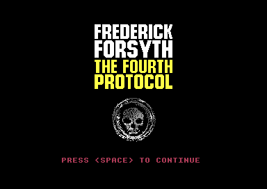
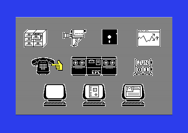
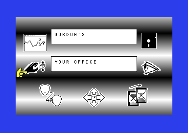
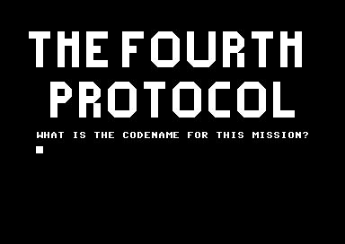

<meta charset="utf-8">
<meta name="viewport" content="width=device-width, initial-scale=1">
<title>The Fourth Protocol</title>
<link rel="preconnect" href="https://fonts.googleapis.com">
<link rel="stylesheet" href="https://fonts.googleapis.com/css2?family=Lato:wght@400;700;900&family=IBM+Plex+Mono:wght@400;500&display=swap">
<style>
:root{
  --bg:#23262d; --paper:#e9e7e1; --surface:#ffffff; --surface-2:#f1efea; --line:#d5d3cc; --line-soft:#e0ded8;
  --ink:#2f3136; --ink-soft:#55585f; --ink-mute:#80838a;
  --link:#1f5fa8; --link-hover:#154480; --accent:#1f5fa8;
  --amber:#c25a00; --cyan:#1f5fa8; --coral:#d04a3a; --green:#2a8a4a; --violet:#4a5bd6; --hl:#fff0c2;
  --chip:#2f3136; --chip-ink:#ffffff;
  --c64blue:#40318d; --c64grey:#686868;
  --fd:'Lato',system-ui,sans-serif; --fb:'Lato',system-ui,sans-serif; --fm:'IBM Plex Mono',ui-monospace,Menlo,monospace;
  --col:1080px; --gx:68px; --fs:17px; --lh:1.6; --hw:900; --h1:46px; --h2:26px; --sy:48px; --pp:26px; --r:10px;
  --plate-shadow:0 1px 2px rgba(0,0,0,.05),0 4px 14px rgba(0,0,0,.05);
}
*{box-sizing:border-box}
html{background:var(--bg);min-height:100%}
body{background:var(--paper);color:var(--ink);font-family:var(--fb);font-size:var(--fs);line-height:var(--lh);max-width:var(--col);margin:0 auto;min-height:100vh;padding:0 0 4rem}
h1,h2,h3{font-weight:var(--hw);letter-spacing:-.01em;text-wrap:balance;color:var(--ink);margin:0}
.wrap{padding:0 var(--gx)}
.hero{padding:48px var(--gx) 8px;text-align:left}
.eyebrow{font-family:var(--fm);font-size:12px;letter-spacing:.08em;text-transform:uppercase;color:var(--ink-mute);margin:0 0 10px}
.hero h1{font-size:var(--h1);line-height:1.15;letter-spacing:-.02em;margin:0 0 14px}
.hero .sub{margin:0 0 .6em;color:var(--ink-soft)}
section{padding:var(--sy) 0 24px}
section:last-of-type{border-bottom:none}
.fig{font-family:var(--fm);font-size:12px;letter-spacing:.08em;text-transform:uppercase;color:var(--ink-mute);margin:0 0 10px}
h2.t{font-size:var(--h2);margin-bottom:12px}
.lede{color:var(--ink-soft);margin:0 0 30px}
.plate{background:var(--surface);border:1px solid var(--line);border-radius:var(--r);padding:var(--pp);box-shadow:var(--plate-shadow)}
.cap{font-size:14px;color:var(--ink-mute);margin-top:14px;line-height:1.55}
.cap b{color:var(--ink);font-weight:700}
code{font-family:var(--fm);font-size:.82em;background:var(--chip);color:var(--chip-ink);border-radius:4px;padding:2px 6px;overflow-wrap:break-word;-webkit-box-decoration-break:clone;box-decoration-break:clone}

h3.tfp-h{font-size:19px;margin:28px 0 8px}
.tfp-pics{display:grid;grid-template-columns:repeat(2,minmax(0,1fr));gap:14px}
.tfp-pics figure{margin:0}
.tfp-pics img{display:block;width:100%;height:auto;image-rendering:pixelated;border-radius:4px}
.tfp-pics figcaption{font-size:13px;color:var(--ink-mute);margin-top:6px;line-height:1.45}
.tfp-cv{display:block;width:100%;height:auto;image-rendering:pixelated;background:#000;border-radius:4px}
.tfp-stack{position:relative}
.tfp-stack canvas+canvas{position:absolute;left:0;top:0;width:100%;height:100%;background:transparent;pointer-events:none}
.tfp-bar{display:flex;flex-wrap:wrap;gap:8px;margin:0 0 14px;align-items:center}
.tfp-btn{font:inherit;font-family:var(--fm);font-size:12.5px;background:var(--surface);border:1px solid var(--line);border-radius:6px;padding:5px 11px;color:var(--ink);cursor:pointer;line-height:1.3}
.tfp-btn:hover{border-color:var(--ink-mute)}
.tfp-btn[aria-pressed="true"]{background:var(--accent);border-color:var(--accent);color:#fff}
.tfp-out{font-size:15px;color:var(--ink);margin:12px 0 0;min-height:3em;line-height:1.55}
.tfp-tbl{border-collapse:collapse;font-size:14px;width:100%;margin:4px 0 0}
.tfp-tbl th,.tfp-tbl td{text-align:left;vertical-align:top;padding:5px 8px;border-bottom:1px solid var(--line-soft)}
.tfp-tbl th{font-weight:700;color:var(--ink-soft)}
.tfp-tbl td.tfp-n{font-family:var(--fm);font-size:13px;white-space:nowrap}
.tfp-tbl tr.tfp-on td{background:var(--hl)}
.tfp-wide{overflow-x:auto}
.tfp-grid{display:grid;grid-template-columns:repeat(auto-fill,minmax(46px,1fr));gap:4px}
.tfp-grid button{font-family:var(--fm);font-size:12px;border:1px solid var(--line);border-radius:5px;padding:5px 0;cursor:pointer;background:var(--surface)}
.tfp-grid button.tfp-zero{background:#f6d8d3;border-color:#e2a99f}
.tfp-grid button.tfp-dead{background:#f7e3bf;border-color:#e0bd7c}
.tfp-grid button[aria-pressed="true"]{outline:2px solid var(--accent);outline-offset:1px}
.tfp-key{display:flex;flex-wrap:wrap;gap:14px;font-size:13px;color:var(--ink-soft);margin:10px 0 0}
.tfp-key i{display:inline-block;width:12px;height:12px;border-radius:3px;border:1px solid var(--line);vertical-align:-1px;margin-right:5px}
.tfp-pick{display:flex;flex-wrap:wrap;gap:8px;align-items:center;margin:0 0 12px}
.tfp-pick select{font:inherit;font-size:14px;padding:4px 6px;border:1px solid var(--line);border-radius:6px;background:var(--surface);max-width:100%}
.tfp-memo{background:#000;border-radius:4px;padding:10px;overflow-x:auto}
.tfp-memo canvas{display:block;image-rendering:pixelated;margin:0 auto}
.tfp-codes{font-family:var(--fm);font-size:12.5px;line-height:1.9;margin:12px 0 0;word-break:break-word}
.tfp-codes span{display:inline-block;border:1px solid var(--line);border-radius:4px;padding:0 5px;margin:0 3px 3px 0;background:var(--surface-2)}
.tfp-codes span b{font-weight:500;color:var(--ink-mute);margin-right:4px}
.tfp-icons{display:grid;grid-template-columns:repeat(auto-fill,minmax(120px,1fr));gap:12px}
.tfp-icons figure{margin:0;text-align:center}
.tfp-icons canvas{display:block;margin:0 auto 4px;image-rendering:pixelated;background:#000;border-radius:3px;max-width:100%}
.tfp-icons figcaption{font-size:12px;color:var(--ink-mute);line-height:1.35}
.tfp-line{font-family:var(--fm);font-size:15px;width:100%;padding:8px 10px;border:1px solid var(--line);border-radius:6px;text-transform:uppercase;background:#40318d;color:#a5a5ff}
.tfp-chips{display:flex;flex-wrap:wrap;gap:6px;margin:10px 0 0}
.tfp-chips button{font-family:var(--fm);font-size:12px;border:1px solid var(--line);border-radius:5px;padding:3px 8px;cursor:pointer;background:var(--surface-2)}
.tfp-parse{font-family:var(--fm);font-size:13.5px;line-height:1.7;margin:12px 0 0;min-height:5em}
.tfp-parse .tfp-hit{background:var(--hl);border-radius:3px}
@media (max-width:640px){ .tfp-pics{grid-template-columns:minmax(0,1fr)} :root{--gx:16px;--pp:14px} }
</style>
<!-- tabs -->
<header class="hero">
  <p class="eyebrow">1985 · Hutchinson Computer Publishing (UK); Bantam Software (US)</p>
  <h1>The Fourth Protocol</h1>
  <p class="sub">Frederick Forsyth's thriller as three games on one disk: a desk job against the clock, an adventure played with a pointing hand, and a bomb defused by typing. Underneath are an operating system of the game's own, every memo packed four bits to a word, and a telephone number that stops the machine.</p>
</header>
<main class="wrap">

<section data-part="">
  <p class="fig">01 · The game</p>
  <h2 class="t">Three games on one disk</h2>
  <p>The Fourth Protocol turns Frederick Forsyth's novel of 1984 into three games, one for each stage of the plot. You are Preston, newly made head of the section C1(A).</p>
  <p>In episode one, The NATO Documents, you sit at Cencom, a screen of icons, for forty days. Memos and reports arrive, the telephone rings, and you decide whom to watch and what to act on until you can name who is leaking NATO's papers. Episode two, The Bomb, sends you across London and beyond, again with icons, to find where a nuclear bomb is hidden. In episode three, The SAS Assault, you type commands in a single room to defuse it.</p>
  <p>Each episode loads on its own from a menu after the title, so any of them can be played first. The manual asks for them in order, and episode three will not start without a code word found in episode two.</p>
  <div class="plate"><div class="tfp-pics">
    <figure><figcaption>The title picture, with David Dunn's tune playing.</figcaption></figure>
    <figure><figcaption>Episode one: Cencom on the first day.</figcaption></figure>
    <figure><figcaption>Episode two: your office at Gordon's.</figcaption></figure>
    <figure><figcaption>Episode three asks for a code word before it starts.</figcaption></figure>
  </div></div>
</section>

<section data-part="title">
  <p class="fig">02 · The title tune</p>
  <h2 class="t">Music: David Dunn's title tune</h2>
  <p class="lede">The tune plays while the title picture waits for SPACE. It lasts two and a half minutes, then starts again.</p>
  <div class="plate"><div id="tfp-music"></div><p class="cap">The page runs the game's own player, <code>tune_play</code> at <code>$CCF5</code>, on the kit's 6502, once a frame as the title's raster interrupt does. It reads the player and the tune from the title's listing, <code>$C388</code> to <code>$CF27</code>, and plays what the player writes to the sound chip through the site's model of the chip. A test beside the page runs the title's own interrupt on the same bytes for a whole pass of the tune and checks that every write matches. The filter's cutoff is one 6581's, and real chips differ. Voices 1 and 2 go down to 32 Hz, which laptop and phone speakers barely play.</p></div>
  <p>The tune is a stream of bytes from <code>$C389</code>, read by <code>tune_play</code> once a frame from the title's raster interrupt at line 252 (<code>title_irq</code>, <code>$413F</code>). Each command byte is the low byte of the address of its own routine in page <code>$CD</code>. The player writes it into a <code>JMP</code> instruction at <code>tune_dispatch</code> and jumps, so the commands need no table: command <code>$53</code> is the routine at <code>$CD53</code>.</p>
  <div class="plate tfp-wide"><table class="tfp-tbl">
    <tr><th>Command</th><th>What it does</th></tr>
    <tr><td class="tfp-n"><code>$0E</code> <code>$17</code> <code>$20</code></td><td>Start a note on voice 1, 2 or 3, its frequency in the next two bytes</td></tr>
    <tr><td class="tfp-n"><code>$29</code> <code>$38</code></td><td>Start notes on voices 1 and 2, or on all three</td></tr>
    <tr><td class="tfp-n"><code>$53</code></td><td>End the step</td></tr>
    <tr><td class="tfp-n"><code>$5B</code> <code>$8D</code> <code>$D4</code></td><td>Set the three voices' envelopes, pulse widths or waveforms</td></tr>
    <tr><td class="tfp-n"><code>$CB</code></td><td>Set the length of a step, in frames</td></tr>
    <tr><td class="tfp-n"><code>$E9</code></td><td>Set the filter and the volume</td></tr>
    <tr><td class="tfp-n"><code>$82</code></td><td>Go back to the start of the stream</td></tr>
    <tr><td class="tfp-n"><code>$4D</code> <code>$B4</code></td><td>Count and stop, which this tune never uses</td></tr>
  </table></div>
  <p>Every step lasts 17 frames, and each note's gate goes off three frames before the step ends, so the notes never quite join (<code>tune_step_length</code>). Within a step, <code>tune_effects</code> makes two voices warble: voice 2 flips between its note and the note plus <code>$30</code> every fifth frame, and voice 3 between its note and the note plus <code>$40</code> every sixth. The filter, its resonance at full, works on voice 2 or voice 3 by turns, and its mode and cutoff change as the tune goes on. The stream is 438 steps long, 7,446 frames. That is 2 minutes 29 seconds on a European machine, and then command <code>$82</code> sends the player back to the start.</p>
</section>

<section data-part="nato-documents">
  <p class="fig">03 · One frame, rebuilt from memory</p>
  <h2 class="t">Cencom, drawn by an operating system of the game's own</h2>
  <p class="lede">Episodes one and two never print a character the Commodore's way. Everything on the screen is drawn into a high-resolution bitmap by a small operating system that the game keeps in the memory under the Commodore's own.</p>
  <div class="plate">
    <div class="tfp-bar" id="tfp-cen-bar"></div>
    <div class="tfp-stack"><canvas class="tfp-cv" id="tfp-cen" width="768" height="544"></canvas><canvas id="tfp-cen-ov" width="768" height="544"></canvas></div>
    <p class="tfp-out" id="tfp-cen-out">Point at an icon to see its record.</p>
    <div class="tfp-wide"><table class="tfp-tbl" id="tfp-cen-tbl"></table></div>
    <p class="cap">The page draws this from one frame of episode one, recorded in the emulator: the video chip's registers, the bitmap at <span data-part=""><code>$2000</code></span>, its colours at <span data-part=""><code>$0C00</code></span> and the two sprites of the pointer, run through the site's model of the video chip. All 104,448 pixels match the emulator's own picture of the same frame. The boxes come from the operating system's tables in the same frame, <code>window_table</code> at <code>$0200</code> and <code>icon_table</code> at <code>$0300</code>.</p>
  </div>
  <p>The operating system, the file <code>XXXMYOS1</code>, copies itself to <span data-part=""><code>$EB00</code>-<code>$FFFF</code></span>, the memory under the KERNAL (the Commodore's own operating system in ROM), and the game then switches the KERNAL out of sight. It keeps one picture of 320 by 200 pixels, a bitmap at <span data-part=""><code>$2000</code></span>, with a byte of colours for each 8 by 8 cell at <span data-part=""><code>$0C00</code></span>. Its background is a pattern of white and black stripes (<code>clear_screen</code>).</p>
  <p>On that picture it keeps two lists. The 16 windows are rectangles of cells, each with a double frame, black outside and white inside; windows 8 to 14 save what they cover and put it back when they close. The 32 icons are pictures, one bit to a pixel, placed in a rectangle of cells inside a window or on the whole screen (window <code>$10</code>). The pointer is two sprites, a shape and its black outline. In episode one it is a yellow hand, and SPACE moves it from icon to icon.</p>
</section>

<section data-part="resident">
  <p class="fig">04 · The operating system</p>
  <h2 class="t">87 numbered calls, and 25 that crash</h2>
  <p class="lede">A program asks the operating system for something by calling <code>$EC00</code> with the number of what it wants in the accumulator, the processor's main register.</p>
  <div class="plate">
    <div class="tfp-grid" id="tfp-os"></div>
    <div class="tfp-key"><span><i style="background:var(--surface)"></i>a function</span><span><i style="background:#f6d8d3"></i>zero: a call jumps to <code>$0000</code></span><span><i style="background:#f7e3bf"></i>reaches <code>JMP $FC00</code></span></div>
    <p class="tfp-out" id="tfp-os-out">Press a number to read what the listing says about its function.</p>
    <p class="cap">Read from <code>os_function_table</code> at <code>$EC22</code> in the operating system's listing: two bytes, an address, for each number from <code>$00</code> to <code>$56</code>.</p>
  </div>
  <p>Some functions take what they need from the bytes that follow the call: a window's position and size, or an icon's picture and colour. The function then returns past them (<code>os_inline_args</code>). Thirteen numbers have no function at all, and their entries are zero. Twelve more lead to <code>JMP $FC00</code>, eleven of them at once and function <code>$03</code> by way of <code>draw_to_second_bitmap</code>. <code>$FC00</code> falls in the middle of another instruction, so the processor would run on through bytes that were never meant as code (<code>os_dead_stub</code>). Each of the game's 335 calls names its function with a number written into the code, and none of them asks for one of the 25. Functions <code>$03</code> and <code>$21</code> were meant to send the drawing to a second bitmap at <span data-part=""><code>$C000</code></span>, which was never finished.</p>
</section>

<section data-part="nato-documents">
  <p class="fig">05 · Text</p>
  <h2 class="t">Every memo, packed four bits at a time</h2>
  <p class="lede">Episode one is mostly reading: 46 memos, 16 reports, the sitreps of the watchers and the files of a security firm. They fit on the disk because each word is stored as a number, often in just four bits.</p>
  <div class="plate">
    <div class="tfp-pick" id="tfp-memo-pick"></div>
    <div class="tfp-memo"><canvas id="tfp-memo"></canvas></div>
    <p class="tfp-out" id="tfp-memo-out"></p>
    <div class="tfp-codes" id="tfp-memo-codes"></div>
    <p class="cap">The page unpacks each text from episode one's listing as <code>next_word</code> (<code>$642F</code>) does, and draws it in the operating system's own font (<code>font</code>, at <code>$FDB2</code> in its listing). Each grey chip is one word: the codes that stand for it, in hexadecimal, then the word. A test beside the page runs the game's own <code>print_text</code> (<code>$63AC</code>) on all 121 texts and checks that the page prints the same characters.</p>
  </div>
  <p>A text is a run of four-bit codes, read from the low half of each byte first. The thirteen commonest things in English text, the space, eleven letters and the new line, take a single code each. Two codes give the rest of the letters and the commonest short pieces, and three codes give one of 256 whole words. The words themselves sit in a dictionary of 301 at <code>$96D0</code>, and the game finds word number n by counting n zero bytes from its start (<code>find_dictionary_word</code>).</p>
  <div class="plate tfp-wide"><table class="tfp-tbl">
    <tr><th>Codes</th><th>Word number</th><th>What those words are</th></tr>
    <tr><td class="tfp-n">3 to F</td><td class="tfp-n">288 to 300</td><td>The space, the eleven commonest letters, E A I S R T N O L D C, and the new line</td></tr>
    <tr><td class="tfp-n">1, then n</td><td class="tfp-n">256 to 271</td><td>256 ends the text; then short pieces such as AND, THE and ING</td></tr>
    <tr><td class="tfp-n">0, then n</td><td class="tfp-n">272 to 287</td><td>The rarer letters, an asterisk, FROM:, the full stop and the comma</td></tr>
    <tr><td class="tfp-n">2, then l, h</td><td class="tfp-n">0 to 255</td><td>Word h × 16 + l: whole words, digits and punctuation</td></tr>
  </table></div>
  <p>Episode two packs its texts the same way with a dictionary of its own (<span data-part="the-bomb"><code>dictionary</code> at <code>$C91C</code></span> in its listing). Episode three, written by another programmer, keeps its 188 messages as plain capitals.</p>
</section>

<section data-part="nato-documents">
  <p class="fig">06 · Episode one</p>
  <h2 class="t">Forty days at Cencom</h2>
  <p class="lede">Episode one runs on a clock. A day lasts 14,400 frames, 4 minutes 48 seconds on a European machine, and the game gives you 40 of them to find who is passing NATO's papers on.</p>
  <p>The clock is the raster interrupt, which the video chip raises once a frame: <code>day_clock</code> (<code>$5C38</code>) counts the frames and ends the day when the count reaches 14,400. The calendar starts in June and turns to July with a picture of an L drawn over the N of JUN (<code>pic_calendar_l</code>).</p>
  <p>Everything that happens is an event in one of four lists, of the story's memos, the reports, the watchers' findings and the telephone calls, each with eight places for each of 41 days, from <span data-part=""><code>$1000</code></span> on. A choice you make, an option in a memo or an answer on the telephone, puts the next event a few days ahead (<code>schedule_in</code>). Your prestige starts at 500 and ends the game below 50 (<code>add_prestige</code>), and it sets how many watchers you may put on your suspects: a tenth of your prestige, plus 50 (<code>watcher_allowance</code>).</p>
  <h3 class="tfp-h">Building 17's locks</h3>
  <p>Memo 28 asks you to secure Building 17. You place locks on the doors of two floor plans, and <code>judge_locks</code> (<code>$7C3F</code>) answers with a memo a few days later. Lock doors below to see what it says. A building that fails always brings memo 32, a serious breach: the game has a second memo, a break-in, for one time in 99, and a slip in the code means it never comes (<a href="discoveries.html#tfp-breakin">Discoveries</a>).</p>
  <div class="plate">
    <div id="tfp-locks"></div>
    <p class="tfp-out" id="tfp-locks-out"></p>
    <p class="cap">The page judges the locks as <code>judge_locks</code> does, with the counts <code>lock_door</code> keeps for each kind of room (<code>lock_counts</code>, <code>$7EE8</code>). A test beside the page runs the game's own routine on every combination of counts the two floors allow, with its random number seeded once to give 0 and once not, and checks that the page gives the same memos and progress. The doors are those of <code>basement_doors</code> and <code>ground_floor_doors</code>; the plans themselves are on the Maps tab.</p>
  </div>
  <h3 class="tfp-h">The end</h3>
  <p>The telephone number 12377563 reaches Sir Anthony Plumb, who asks six questions (<code>plumb_questions</code>, <code>$501B</code>): the traitor, his contact's nationality, the contact's alias and real name, the proof, and where it happened. Six right answers, with the fingerprint found among Holmar's effects in Sweden, start a countdown of ten days, and its end wins the game. Day 41 without it loses, and so does prestige below 50. The winning memo, from Sir Nigel Irvine, carries a password for the next episode: 10 190 216 277 358.</p>
</section>

<section data-part="the-bomb">
  <p class="fig">07 · Episode two</p>
  <h2 class="t">249 places, chosen with icons</h2>
  <p class="lede">Episode two is an adventure across London, Bristol, Dover and a housing estate at Faslane, played entirely with the pointing hand.</p>
  <div class="plate">
    <div class="tfp-icons" id="tfp-icons"></div>
    <p class="cap">Episode two's icons, drawn by the page from the file <code>XXXICONS</code> (<code>$1000</code>-<code>$1FFF</code>), one bit to a pixel, in rows as many bytes wide as the icon is cells. Each address links to the picture in the listing.</p>
  </div>
  <p>The screen shows the place's two names in two windows, and seven icons around them: manipulate, assessment, utilities, look, wait, move and communicate (<code>main_menu</code>). Most open a window of icons of their own, drawn in another colour where they cannot be used here. Every choice counts as a move (<code>moves</code>, <code>$4042</code>), and the assessment icon reports your efficiency as a percentage together with the moves taken.</p>
  <p>Each of the 249 places is a record of 14 bytes (<code>location_records</code>, <code>$ADFD</code>): where each of the eight directions leads, north, east, south, west, enter, leave, up and down; what is there, such as a lift, a telephone or a ticket barrier; its two names; and a line about who is present. The Maps tab walks through all of them. The taxi takes a word for a destination (<code>taxi_destinations</code>, <code>$7C6F</code>), the telephone takes a word for a number (<code>phone_numbers</code>, <code>$8231</code>), and the lifts take a code (<code>lift</code>, <code>$496C</code>).</p>
  <p>Episode two has no music and no sound effects: no instruction in it touches the sound chip. It sets up no interrupt either, so nothing happens until you choose something.</p>
</section>

<section data-part="sas-assault">
  <p class="fig">08 · Episode three's screen</p>
  <h2 class="t">One room, seven raster interrupts</h2>
  <p class="lede">Episode three is another program by another programmer. It shows a single room, a picture with a text window under it, and changes the video chip's settings seven times on the way down the screen.</p>
  <div class="plate">
    <div class="tfp-bar" id="tfp-room-bar"></div>
    <div class="tfp-stack"><canvas class="tfp-cv" id="tfp-room" width="768" height="544"></canvas><canvas id="tfp-room-ov" width="768" height="544"></canvas></div>
    <p class="tfp-out" id="tfp-room-out"></p>
    <p class="cap">The page draws this from one frame of episode three, recorded in the emulator with the drawer open and the alarm ringing: the video chip's registers at the top of the frame and the 49 writes the interrupts make on the way down, run through the site's model of the video chip. All 104,448 pixels match the emulator's own picture of the same frame. The text window's letters come from the Commodore's character ROM, and the page carries only the 23 letters it shows, from the ROM 901225-01.</p>
  </div>
  <p>The room is a multicolour bitmap at <code>$6000</code>, 160 double-width pixels across and 160 rows down (<code>picture</code>). Everything that moves is a sprite over it: the door, the guard, the drawer and the bomb with its three coloured lights. Eight sprites are not enough, so the interrupts use some of them twice, once in the top half of the screen and again lower down (<code>irq_guard_lower</code>, <code>irq_door_lower</code>). At line <code>$D7</code>, <code>irq_text</code> switches to the character screen at <code>$0400</code> for the five rows of text. It also moves the guards, sounds the siren and scans the keyboard, once a frame.</p>
</section>

<section data-part="sas-assault">
  <p class="fig">09 · Episode three's parser</p>
  <h2 class="t">Eighteen verbs and 28 nouns</h2>
  <p class="lede">You type what Preston does, and the game looks for one verb and one noun in the line. Type a line, or press an example.</p>
  <div class="plate">
    <input class="tfp-line" id="tfp-line" type="text" maxlength="40" value="USE THE SECOND KEYPAD" aria-label="A line typed in episode three" autocomplete="off" spellcheck="false">
    <div class="tfp-chips" id="tfp-line-eg"></div>
    <div class="tfp-parse" id="tfp-parse-out"></div>
    <p class="cap">The page reads the line as <code>parse</code> (<code>$A00C</code>) and <code>find_word</code> (<code>$A182</code>) read it, with the word lists and tables from episode three's listing. A test beside the page runs the game's own parser on 3,530 lines, every verb with every noun and 2,000 lines of random words and pieces of words, and checks that the page finds the same verb, the same noun and the same routine.</p>
  </div>
  <p>The verb is the first word of the line that begins with one of the 18 verbs in <code>verb_words</code> (<code>$A058</code>), so OPENING counts as OPEN and THE is skipped. The noun is looked for after the verb, starting with the character after the verb's last letter, so OPENDOOR finds both. Five verbs need no noun: INVENTORY, EIOK, LISTEN, HIDE and the number 12051987. EIOK is the one that describes the room, and LOOK is not a word the game knows. For each of the others, a table gives one routine for each of the 28 nouns (<code>noun_tables</code>, <code>$B03E</code>); ATTACK, KICK, HIT and KILL share one table, and PUSH and PRESS another.</p>
</section>

<section data-part="sas-assault">
  <p class="fig">10 · Episode three's bomb</p>
  <h2 class="t">Five steps to defuse it, and many ways to set it off</h2>
  <p class="lede">The bomb is in the second drawer of a filing cabinet. It goes off on the 144th line you type, whatever you are doing.</p>
  <div class="plate tfp-wide"><table class="tfp-tbl">
    <tr><th>Type</th><th>What happens</th><th>Where</th></tr>
    <tr><td class="tfp-n">USE SECOND</td><td>Chooses the second keypad, for one line. FIRST and THIRD choose the wrong ones.</td><td class="tfp-n"><code>$B488</code></td></tr>
    <tr><td class="tfp-n">12051987</td><td>On the second keypad the drawer opens and the alarm rings. On the others the bomb goes off.</td><td class="tfp-n"><code>$B298</code></td></tr>
    <tr><td class="tfp-n">CUT CABLE</td><td>Silences the alarm for good.</td><td class="tfp-n"><code>$B362</code></td></tr>
    <tr><td class="tfp-n">PUSH RED, PUSH YELLOW, PUSH GREEN</td><td>In that order the panel slides away and the timer shows. A button out of turn sets the bomb off.</td><td class="tfp-n"><code>$B4BF</code></td></tr>
    <tr><td class="tfp-n">CUT RED, CUT YELLOW, CUT GREEN</td><td>In that order the bomb is defused. A wire out of turn, or the blue one, sets it off.</td><td class="tfp-n"><code>$B54E</code></td></tr>
  </table></div>
  <p>The state of the bomb is one byte (<code>bomb_state</code>, <code>$8784</code>): 0 while the cabinet is sealed, 2 with the drawer open, 4 with the timer showing, and <code>$80</code> once it is defused. Attacking, kicking, hitting, destroying or pushing the cabinet or any part of the bomb sets it off, and so does a guard who kills you. The guards come in while the alarm rings, up to five of them, and with each one in the room your chance of being killed after a line goes up: 1 in 16 with one or two guards, then 1 in 8, 1 in 4 and 1 in 2 (<code>attack_chances</code>, <code>$B66C</code>).</p>
  <p>How it ends depends on the count of lines typed (<code>commands_typed</code>, <code>$879A</code>). The bomb defused brings an alliance government in the 1987 election and early retirement. An explosion on an odd count brings an epilogue from the annals of the Australo-Indonesian empire, and on an even count one in which the blast at Faslane is blamed on a NATO bomb going off by accident. The 144th line always ends on the even one. The Discoveries tab has the stranger corners of the parser.</p>
</section>

</main>
<footer style="margin:16px 0 0;padding:22px var(--gx) 0;border-top:1px solid #e0ded8;font-family:'IBM Plex Mono',ui-monospace,Menlo,monospace;font-size:12px;color:#80838a"><a href="https://github.com/gamesexplained/gamesexplained" style="color:#1f5fa8;text-decoration:none">GitHub</a> · <a href="https://discord.gg/3V9GWyRDWV" style="color:#1f5fa8;text-decoration:none">Discord</a><br>© Games Explained contributors. Write-ups, facts and symbol maps are available under <a href="https://creativecommons.org/licenses/by-sa/4.0/" style="color:#1f5fa8;text-decoration:none">CC BY-SA 4.0</a>; code under <a href="https://opensource.org/licenses/MIT" style="color:#1f5fa8;text-decoration:none">MIT</a></footer>
<script src="../../lib/c64.js"></script>
<script src="../../lib/sid.js"></script>
<script src="../../lib/cpu6502.js"></script>
<script>
/* tfp-music */
// createDriver for C64Sid: David Dunn's title tune, played by the game's own player on the kit's
// 6502 (C64Cpu, from ../../lib/cpu6502.js, which sid.js passes to createDriver), its code and the
// tune taken from the title's listing over TFP_DRIVER_RANGES. The title's raster interrupt at line
// 252 (title_irq, $413F) calls tune_play ($CCF5) once a frame, after start_tune has called
// tune_init ($CE74). init() runs tune_init on the bytes as loaded and play() runs tune_play once;
// stop() clears the 25 registers from $D418 down to $D400, as the title does when SPACE is pressed
// ($4078). After 7,446 frames command $82 sends the player back to the start of the stream, as on
// the title, so the tune runs on.
const TFP_DRIVER_RANGES = [[0xC388, 0xCF27]];
function createDriver(D, C64Cpu) {
  const base = new Uint8Array(0x10000);
  for (const [ad, bytes] of D.mem) base.set(bytes, ad);
  const sid = new Uint8Array(25);
  let m, cpu, writes = [];
  const io = {                                                  // the chips at $D000-$DFFF
    read(ad) { throw new Error('read $' + ad.toString(16)); },
    write(ad, val) {
      if (ad >= 0xD400 && ad <= 0xD418) { sid[ad - 0xD400] = val; writes.push(ad - 0xD400, val); return; }
      throw new Error('write $' + ad.toString(16));
    },
  };
  const run = (ad) => cpu.call(ad, {}, { maxSteps: 100000 });
  return {
    sid,
    get writes() { return writes; },
    init() { m = base.slice(); cpu = new C64Cpu.CPU(m, { port: 0x35, io }); sid.fill(0); writes = []; run(0xCE74); },
    stop() { writes = []; for (let r = 24; r >= 0; r--) { sid[r] = 0; writes.push(r, 0); } },
    play() { writes = []; run(0xCCF5); },
    playing() { return true; },
  };
}
// end of tfp-music
</script>
<script>
/* tfp-text */
// Episode one's packed text, read as next_word ($642F) reads it and printed as print_text ($63AC)
// prints it. A text is a stream of four-bit codes, the low half of each byte first; a code or a
// group of codes is a word number into the dictionary at $96D0, 301 zero-terminated words counted
// from its start (find_dictionary_word): 3-15 alone are words 288-300, 1 n words 256-271 (256 ends
// the text), 0 n words 272-287, and 2 l h words h * 16 + l. print_word drops a space that comes at
// the start of the text or of a line ($1969), and print_text_joined ($63A5), which the room names of
// Building 17 are printed with, keeps the one at the start (joined). The tables hold each text's
// address, low byte first.
// Episode two packs its texts the same way (next_word_number, $AA8B) against its own dictionary of
// 301 words at $C91C (find_word), and print_string ($AA58) drops the same spaces.
const TFP_TEXT_TABLES = [
  { name: 'Memos', at: 0x5A4F, n: 46 },
  { name: 'Reports', at: 0x5AAB, n: 16 },
  { name: 'Sitreps', at: 0x5ACB, n: 16 },
  { name: 'Calls', at: 0x5AEB, n: 16 },
  { name: 'Sitreps with nothing seen', at: 0x5B0B, n: 7 },
  { name: 'Blenheim files', at: 0x5B19, n: 26 },
];
const TFP_DICTIONARY = 0x96D0;
function tfpWords(ram, at = TFP_DICTIONARY) {
  const w = [];
  for (let a = at, i = 0; i < 301; i++) {
    const at = a; let text = '';
    while (ram[a]) text += String.fromCharCode(ram[a++]);
    w.push({ at, text }); a++;
  }
  return w;
}
function tfpUnpack(ram, ad) {
  let low = true;
  const nib = () => { const v = low ? ram[ad] & 15 : ram[ad++] >> 4; low = !low; return v; };
  const out = [];
  for (;;) {
    const c = nib(), codes = [c];
    let n;
    if (c === 0) { const x = nib(); codes.push(x); n = 272 + x; }
    else if (c === 1) { const x = nib(); codes.push(x); n = 256 + x; }
    else if (c === 2) { const l = nib(), h = nib(); codes.push(l, h); n = h * 16 + l; }
    else n = 285 + c;
    if (n === 256) break;
    out.push({ codes, word: n });
  }
  return { words: out, end: low ? ad : ad + 1 };
}
function tfpText(ram, words, ad, joined = false) {
  let drop = !joined, s = '';
  for (const w of tfpUnpack(ram, ad).words) for (const ch of words[w.word].text) {
    const c = ch.charCodeAt(0);
    if (c === 0x20 && drop) continue;
    drop = c === 13;
    s += ch;
  }
  return s;
}
// end of tfp-text
</script>
<script>
/* tfp-parse */
// Episode three's parser, as parse ($A00C) and find_word ($A182) read the line at $0200. The verb
// is the first word of the line that begins with a word of verb_words ($A058), whose last letter
// has bit 7 set; the search compares from the start of each word of the line and gives up at the
// line's end. The noun is looked for in noun_words ($A0F8) from the character after the verb's
// last matched letter, so it may start inside the verb's word (OPENDOOR) or follow it. Verbs 0-4
// run their routine from verb_actions ($B017); for the rest, noun_tables ($B03E) gives a table of
// routines a noun for verb number - 5. Both tables hold routine addresses less one, taken with an
// RTS. tfpParse returns { verb, noun, routine, at } with -1 for a word not found and routine the
// address that runs; at gives where in the line each word matched.
const TFP_VERBS = 0xA058, TFP_NOUNS = 0xA0F8, TFP_VERB_ACTIONS = 0xB017, TFP_NOUN_TABLES = 0xB03E;
function tfpFind(ram, list, line, x) {
  const ch = (i) => (i < line.length ? line.charCodeAt(i) : 0);
  for (;;) {
    x++;
    if (x >= 40 || !ch(x)) return null;
    if (ch(x) === 0x20) continue;
    const start = x;
    let y = 0, n = 0;
    for (;;) {
      const d = (ch(x) - ram[list + y]) & 255;
      if (d === 0) { y++; x++; if (x >= 40 || !ch(x)) return null; continue; }
      if (d === 0x80) return { n, start, x };
      x = start; n++;
      while (!(ram[list + y] & 0x80)) y++;
      y++;
      if (ram[list + y]) continue;
      while (x < 40 && ch(x) && ch(x) !== 0x20) x++;     // no list word here: the next word of the line
      if (x >= 40 || !ch(x)) return null;
      break;
    }
  }
}
function tfpListWords(ram, list) {
  const w = []; let s = '';
  for (let a = list; ram[a]; a++) { s += String.fromCharCode(ram[a] & 0x7F); if (ram[a] & 0x80) { w.push(s); s = ''; } }
  return w;
}
function tfpParse(ram, line) {
  line = line.slice(0, 40);
  const v = tfpFind(ram, TFP_VERBS, line, -1);
  if (!v) return { verb: -1, noun: -1, routine: null, at: [] };
  if (v.n < 5) {
    const t = TFP_VERB_ACTIONS + 2 * v.n;
    return { verb: v.n, noun: -1, routine: (ram[t] | ram[t + 1] << 8) + 1, at: [v] };
  }
  const o = tfpFind(ram, TFP_NOUNS, line, v.x);
  if (!o) return { verb: v.n, noun: -1, routine: null, at: [v] };
  const k = TFP_NOUN_TABLES + 2 * (v.n - 5), tab = ram[k] | ram[k + 1] << 8;
  return { verb: v.n, noun: o.n, routine: (ram[tab + 2 * o.n] | ram[tab + 2 * o.n + 1] << 8) + 1, at: [v, o] };
}
// end of tfp-parse
</script>
<script>
/* tfp-locks */
// Building 17's verdict, as judge_locks ($7C3F) gives it from the counts lock_door keeps
// (lock_counts, $7EE8): a lock on a WC brings memo 30 and one on the staircase memo 29, each the
// next day (judge_amenities); the building is secure with at least two locks on offices, one on the
// security door, two on the main entrance, two on the computer room and data storage together, and
// one on the desk and key room (judge_security), and otherwise memo 32 comes the next day. The
// game meant memo 31 when random gives 0, but its BNE ($7CB6) tests the Z flag random's last
// CMP #$63 leaves, never set, so memo 32 comes every time. A building that fails brings memo 28
// back in three days; one that passes brings memo 42 the next day with more than 10 locks in all,
// or otherwise adds 10 to progress (add_progress) and brings memo 33 in four days. c holds the
// counts { offices, wcs, staircase, security, entrance, computer, desk, total }. Returns
// { memos: [[memo, days], ...], progress }, in the order the game schedules them.
const TFP_DOORS = [
  ['Basement', [['computer', 'Computer room'], ['offices', 'Office'], ['wcs', 'Male WC'], ['wcs', 'Female WC'],
    ['', 'Lift'], ['', 'Lift'], ['staircase', 'Staircase'], ['computer', 'Data storage'], ['computer', 'Computer room']]],
  ['Ground floor', [['entrance', 'Main entrance'], ['entrance', 'Main entrance'], ['desk', 'Desk and key room'], ['', 'Tea room'], ['', 'Photocopy room'],
    ['wcs', 'Male WC'], ['wcs', 'Female WC'], ['', 'Lift'], ['', 'Lift'], ['staircase', 'Staircase'], ['offices', 'Office'], ['security', 'Security door'], ['', 'Meeting room']]],
];
function tfpJudge(c) {
  const memos = [];
  let ok = true, progress = 0;
  if (c.wcs) { memos.push([30, 1]); ok = false; }
  if (c.staircase) { memos.push([29, 1]); ok = false; }
  if (!(c.offices >= 2 && c.security && c.entrance >= 2 && c.computer >= 2 && c.desk)) {
    ok = false; memos.push([32, 1]);
  }
  if (!ok) memos.push([28, 3]);
  else if (c.total >= 11) memos.push([42, 1]);
  else { progress = 10; memos.push([33, 4]); }
  return { memos, progress };
}
// end of tfp-locks
</script>
<script>
// The frames: kit/c64/frame.py capture, trimmed to the memory the drawing reads, in VICE v3.14.0.
// TFP_CENCOM is episode one's Cencom screen on the first day; TFP_CENCOM_ICONS and _WINDOWS are the
// used entries of icon_table ($0300, 8 bytes: x, y, width, height, picture, colour, window) and
// window_table ($0200, 16 bytes: x, y, width, height, two pattern bytes, colour) in the same frame.
// TFP_ROOM is episode three with the drawer open and the alarm ringing; its text window shows
// the character ROM, so rom_excerpt holds the glyphs it shows and no others.
const TFP_CENCOM = {"schema":1,"standard":"PAL","lines":312,"cycles":63,"about":"","vic":[96,138,96,138,0,0,0,0,0,0,0,0,0,0,0,0,16,59,0,209,0,3,200,0,61,118,241,0,0,0,3,3,246,246,241,242,243,244,240,247,240,243,244,245,246,247,252],"cia2":[199,63],"cpu":[47,21],"writes":[],"colour":"Dg4ODg4ODg4ODg4ODg4ODg4ODg4ODg4ODg4ODg4ODg4ODg4ODg4ODg4ODg4ODg4ODg4ODg4ODg4ODg4ODg4ODg4ODg4ODg4ODg4ODg4ODg4ODg4ODg4ODg4ODg4ODg4ODg4ODg4ODg4ODg4ODg4ODg4ODg4ODg4ODg4ODg4ODg4ODg4ODg4ODg4ODg4ODg4ODg4ODg4ODg4ODg4ODg4ODg4ODg4ODg4ODg4ODg4ODg4ODg4ODg4ODg4ODg4ODg4ODg4ODg4ODg4ODg4ODg4ODg4ODg4ODg4ODg4ODg4ODg4ODg4ODg4ODg4ODg4ODg4ODg4ODg4ODg4ODg4ODg4ODg4ODg4ODg4ODg4ODg4ODg4ODg4ODg4ODg4ODg4ODg4ODg4ODg4ODg4ODg4ODg4ODg4ODg4ODg4ODg4ODg4ODg4ODg4ODg4ODg4ODg4ODg4ODg4ODg4ODg4ODg4ODg4ODg4ODg4ODg4ODg4ODg4ODg4ODg4ODg4ODg4ODg4ODg4ODg4ODg4ODg4ODg4ODg4ODg4ODg4ODg4ODg4ODg4ODg4ODg4ODg4ODg4ODg4ODg4ODg4ODg4ODg4ODg4ODg4ODg4ODg4ODg4ODg4ODg4ODg4ODg4ODg4ODg4ODg4ODg4ODg4ODg4ODg4ODg4ODg4ODg4ODg4ODg4ODg4ODg4ODg4ODg4ODg4ODg4ODg4ODg4ODg4ODg4ODg4ODg4ODg4ODg4ODg4ODg4ODg4ODg4ODg4ODg4ODg4ODg4ODg4ODg4ODg4ODg4ODg4ODg4ODg4ODg4ODg4ODg4ODg4ODg4ODg4ODg4ODg4ODg4ODg4ODg4ODg4ODg4ODg4ODg4ODg4ODg4ODg4ODg4ODg4ODg4ODg4ODg4ODg4ODg4ODg4ODg4ODg4ODg4ODg4ODg4ODg4ODg4ODg4ODg4ODg4ODg4ODg4ODg4ODg4ODg4ODg4ODg4ODg4ODg4ODg4ODg4ODg4ODg4ODg4ODg4ODg4ODg4ODg4ODg4ODg4ODg4ODg4ODg4ODg4ODg4ODg4ODg4ODg4ODg4ODg4ODg4ODg4ODg4ODg4ODg4ODg4ODg4ODg4ODg4ODg4ODg4ODg4ODg4ODg4ODg4ODg4ODg4ODg4ODg4ODg4ODg4ODg4ODg4ODg4ODg4ODg4ODg4ODg4ODg4ODg4ODg4ODg4ODg4ODg4ODg4ODg4ODg4ODg4ODg4ODg4ODg4ODg4ODg4ODg4ODg4ODg4ODg4ODg4ODg4ODg4ODg4ODg4ODg4ODg4ODg4ODg4ODg4ODg4ODg4ODg4ODg4ODg4ODg4ODg4ODg4ODg4ODg4ODg4ODg4ODg4ODgIPCAcADwQPBA8FDwMOAAsECwIPAAcFDA==","ram":[{"a":2944,"b":"AAAAAAGAAAOAAAPAAAPAAAHgAAHwAAD4P//8f//+P4B+AD++AD++AAB+AB++AB++AAB+AA++AA++AAD+AAAA"},{"a":3008,"b":"AAPAAAfgAAfgAAfgAAfwAAf4AAP8f//+////////////f///AH//AH//AD//AD//AD//AB//AB//AB//AAH/"},{"a":3072,"b":"EBAQEBAQEBAQEBAQEBAQEBAQEBAQEBAQEBAQEBAQEBAQEBAQEBAQEBAQEBAQEBAQEBAQEBAQEBAQEBAQEBAQEBAQEBAQEBAQEBAQEBAQEBAQEBAQEBAQEBAQEBAQEBAQEBAQEBAQEBAQEBAQEBAQEBAQEBAQEBAQEBAQEBAQEBAQEBAQEBAQEBAQEBAQEBAQEBAQEBAQEBAQEBAQEBAQEBAQEBAQEBAQEBAQEBAQEBAQEBAQEBAQEBAQEBAQEBAQEBAQEBAQEBAQEBAQEBAQEBAQEBAQEBAQEBAQEBAQEBAQEBAQEBAQEBAQEBAQEBAQEBAQEBAQEBAQEBAQEBAQEBAQEBAQEBAQEBAQEBAQEBAQEBAQEBAQEBAQEBAQEBAQEBAQEBAQEBAQEBAQEBAQEBAQEBAQEBAQEBAQEBAQEBAQEBAQEBAQEBAQEBAQEBAQEBAQEBAQEBAQEBAQEBAQEBAQEBAQEBAQEBAQEBAQEBAQEBAQEBAQEBAQEBAQEBAQEBAQEBAQEBAQEBAQEBAQEBAQEBAQEBAQEBAQEBAQEBAQEBAQEBAQEBAQEBAQEBAQEBAQEBAQEBAQEBAQEBAQEBAQEBAQEBAQEBAQEBAQEBAQEBAQEBAQEBAQEBAQEBAQEBAQEBAQEBAQEBAQEBAQEBAQEBAQEBAQEBAQEBAQEBAQEBAQEBAQEBAQEBAQEBAQEBAQEBAQEBAQEBAQEBAQEBAQEBAQEBABEAEQEBAQEBAQEBAQEBAQEBAQEBAQEBAQEBAQEBAQEBAQEBAQEBAQEBAQEBAQEBAQEBAQEBAQEBAQEBAQEBAQEBAQEBAQEBAQEBAQEBAQEBAQEBAQEBAQEBAQEBAQEBAQEBAQEBAQEBAQEBAQEBAQEBAQEBAQEBAQEBAQEBAQEBAQEBAQEBAQEBAQEBAQEBAQEBAQEBAQEBAQEBAQEBAQEBAQEBAQEBAQEBAQEBAQEBAQEBAQEBAQEBAQEBAQEBAQEBAQEBAQEBAQEBAQEBAQEBAQEBAQEBAQEBAQEBAQEBAQEBAQEBAQEBAQEBAQEBAQEBAQEBAQEBAQEBAQEBAQEBAQEBAQEBAQEBAQEBAQEBAQEBAQEBAQEBAQEBAQEBAQEBAQEBAQEBAQEBAQEBAQEBAQEBAQEBAQEBAQEBAQEBAQEBAQEBAQEBAQEBAQEBAQEBAQEBAQEBAQEBAQEBAQEBAQEBAQEBAQEBAQEBAQEBAQEBAQEBAQEBAQEBAQEBAQEBAQEBAQEBAQEBAQEBAQEBAQEBAQEBAQEBAQEBAQEBAQEBAQEBAQEBAQEBAQEBAQEBAQEBAQEBAQEBAQEBAQEA=="},{"a":4088,"b":"Li8="},{"a":8192,"b":"/wD/AP8A/wD/AP8A/wD/AP8A/wD/AP8A/wD/AP8A/wD/AP8A/wD/AP8A/wD/AP8A/wD/AP8A/wD/AP8A/wD/AP8A/wD/AP8A/wD/AP8A/wD/AP8A/wD/AP8A/wD/AP8A/wD/AP8A/wD/AP8A/wD/AP8A/wD/AP8A/wD/AP8A/wD/AP8A/wD/AP8A/wD/AP8A/wD/AP8A/wD/AP8A/wD/AP8A/wD/AP8A/wD/AP8A/wD/AP8A/wD/AP8A/wD/AP8A/wD/AP8A/wD/AP8A/wD/AP8A/wD/AP8A/wD/AP8A/wD/AP8A/wD/AP8A/wD/AP8A/wD/AP8A/wD/AP8A/wD/AP8A/wD/AP8A/wD/AP8A/wD/AP8A/wD/AP8A/wD/AP8A/wD/AP8A/wD/AP8A/wD/AP8A/wD/AP8A/wD/AP8A/wD/AP8A/wD/AP8A/wD/AP8A/wD/AP8A/wD/AP8A/wD/AP8A/wD/AP8A/wD/AP8A/wD/AP8A/wD/AP8A/wD/AP8A/wD/AP8A/wD/AP8A/wD/AP8A/wD/AP8A/wD/AP8A/wD/AP8A/wD/AP8A/wD/AP8A/wD/AP8A/wD/AP8A/wD/AP8A/wD/AP8A/wD/AP8A/wD/AP8A/wD/AP8A/wD/AP8A/wD/AP8A/wD/AP8A/wD/AP8A/wD/AP8A/wD/AP8A/wD/AP8A/wD/AP8A/wD/AP8A/wD/AP8A/wD/AP8A/wD/AP8A/wD/AP8A/wD/AP8A/wD/AP8A/wD/AP8A/wD/AP8A/wD/AP8A/wD/AP8A/wD/AP8A/wD/AP8A/wD/AP8A/wD/AP8A/wD/AP8A/wD/AP8A/wD/AP8A/wD/AP8A/wD/AP8A/wD/AP8A/wD/AP8A/wD/AP8A/wD/AP8A/wD/AP8A/wD/AP8A/wD/AP8A/wD/AP8A/wD/AP8A/wD/AP8A/wD/AP8A/wD/AP8A/wD/AP8A/wD/AP8A/wD/AP8A/wD/AP8A/wD/AP8A/wD/AP8A/wD/AP8A/wD/AP8A/wD/AP8A/wD/AP8A/wD/AP8A/wD/AP8A/wD/AP8A/wD/AP8A/wD/AP8A/wD/AP8A/wD/AP8A/wD/AP8A/wD/AP8A/wD/AP8A/wD/AP8A/wD/AP8A/wD/AP8A/wD/AP8A/wD/AP8A/wD/AP8A/wD/AP8A/wD/AP8A/wD/AP8A/wD/AP8A/wD/AP8A/wD/AP8A/wD/AP8A/wD/AP8A/wD/AP8A/wD/AP8A/wD/AP8A/wD/AP8A/wD/AP8A/wD/AP8A/wD/AP8A/wD/AP8A/wD/AP8A/wD/AP8B/wb9G/dv/4B/////////AP////79+/8A379//////wD/////////APn17d29ff8A/wD/AP8A/wD/AP8A/wD/AP8A/wD/AP8A/wD/AP8A/wD/AP8A/7D/AP8A/wD/AP8g7Y2NjY2N/wD/////////AP////////8N4eHh4e3v/wD/AP8A/wD/AP8A/wD/AP8A/wD/AP8A/wD/AP8A/wD/gICAgICAgP8AAAAAAAAA/wAAAAAAAAD/AQEBAQEBAf8A/wD/AP8A/wD/AP8A/wD/AP8A/wD/AP8A/wD/AP8A/wD/AP8A/wD/gL+2q7+Av/8A/7uv/wD//wD/q13/AP//AP////8A//8A/////wD//wH9/f39Af3/AP8A/wD/AP8A/wD/AP8A/wD/AP8A/wD/AP8A/wD/AP8A/wD/AP8AwF/fX99d3l0A/4O7g/8A/wDz9uwAf35+ACpUqQD/D+8Abd29GdXB2f39/f39/f39/wD/AP8A/wD/AP8A/wD/AP8A/wD/AP8A/wD/AP8A/wCfoK6vrq+ur/8HsHa2drZ27e3NDc3NzA//1dv/f/8A//9a7v///wD/72jv6K/oD+j/AP8A/wD/AP8A/wD/AP8A/wD/AP8A/wD/AP8A/wD/AICAgICAgICAAAAAAAADBw8AAAAAAIDA4AEHBwEBAQEB/wD/AP8A/wD/AP8A/wD/AP8A/wD/AP8A/wD/AP8A/wD/AP8A/wD/AL+/v7+/v7+/////////8+v//////////////v////77//8Pz69v7//9/f39/f39/f8A/wD/AP8A/wD/AP8A/wD/AP8A/wD/AP8A/wD/AP8A/wD/AP8A/wDfQN9f31/dXv8A/4O7g/8Afnd4d38Ad/cP/QP9/wB/gMXN2dXNHd09/f39/f39/f3/AP8A/wD/AP8A/wD/AP8A/wD/AP8A/wD/AP8A/wD/AK6gn7D/AP8AsAf/AP8A/wDPwO8g7y/vL/8A/wDb7e3b/wD7QPfs75jvCP8A/wD/AP8A/wD/AP8A/wD/AP8A/wD/AP8A/wD/AP8A/wD/AP8AgICAgICAgIAPDwcDAAAAAeDgwIAAAAAAAQEBAQEBAQH/AP8A/wD/AP8A/wD/AP8A/wD/AP8A/wD/AP8A/wD/AP8A/wD/AP8At6utnp+/v7/dvX7+//////////9/f7+8+vr39+/v397+/H93t6/PDx3NnT09/T39/wD/AP8A/wD/AP8A/wD/AP8A/wD/AP8A/wD/AP8A/wD/AP8A/wD/AN1fwF/fX99d//8A/4O7g/939wD39/f3d3//AP/g7uB/3f0B/f39/d39/f39/f379v8A/wD/AP8A/wD/AP8A/wD/AP8A/wD/AP8A/wD/AP8A/wD/AP8A/wD/AP8A/wD/AO8v7y/vL+8vy+bt29u2t2x/wP8A/wD/AP8A/wD/AP8A/wD/AP8A/wD/AP8A/wD/AP8A/wD/AP8A/wD/AP8A/wCAgICAgICAgAMDAwMBAAAAgICAgAAAAAABAQEBAQEBAf8A/wD/AP8A/wD/AP8A/wD/AP8A/wD/AP8A/wD/AP8A/wD/AP8A/wC/v7+/v7+/v///////////29fv//////8//////////////////////f39/f39/f3/AP8A/wD/AP8A/wD/AP8A/wD/AP8A/wD/AP8A/wD/AP8A/wD/AP8A3l3fQN9A/wAA//8A/wD/APd39wD3AP8AgH//AP8A/wA93f0B/AH/AO/Yv2D/gP8A/wD/AP8A/wD/AP8A/wD/AP8A/wD/AP8A/wD/AP8A/wD/AP8A/wD/AP8A/wD/AP8A79jxHP8A/wBvJp9w/wD/AP8A/wD/AP8A/wD/AP8A/wD/AP8A/wD/AP8A/wD/AP8A/wD/AP8A/wD/AP8A/wD/AP8A/wD/AP8A/wD/AP8A/wD/AP8A/wD/AP8A/wD/AP8A/wD/AP8A/wD/AP8A/wD/AP8A/wD/AP8A/wD/AP8A/wD/AP8A/wD/AL+/v4D/AP8A////AP8A/wD///8A/wD/AP///wD/AP8A////AP8A/wD9/f0B/wD/AP8A/wD/AP8A/wD/AP8A/wD/AP8A/wD/AP8A/wD/AP8A/wD/AP8A/wD/AP8A/wD/AP8A/wD/AP8A/wD/AP8A/wD/AP8A/wD/AP8A/wD/AP8A/wD/AP8A/wD/AP8A/wD/AP8A/wD/AP8A/wD/AP8A/wD/AP8A/wD/AP8A/wD/AP8A/wD/AP8A/wD/AP8A/wD/AP8A/wD/AP8A/wD/AP8A/wD/AP8A/wD/AP8A/wD/AP8A/wD/AP8A/wD/AP8A/wD/AP8A/wD/AP8A/wD/AP8A/wD/AP8A/wD/AP8A/wD/AP8A/wD/AP8A/wD/AP8A/wD/AP8A/wD/AP8A/wD/AP8A/wD/AP8A/wD/AP8A/wD/AP8A/wD/AP8A/wD/AP8A/wD/AP8A/wD/AP8A/wD/AP8A/wD/AP8A/wD/AP8A/wD/AP8A/wD/AP8A/wD/AP8A/wD/AP8A/wD/AP8A/wD/AP8A/wD/AP8A/wD/AP8A/wD/AP8A/wD/AP8A/wD/AP8A/wD/AP8A/wD/AP8A/wD/AP8A/wD/AP8A/wD/AP8A/wD/AP8A/wD/AP8A/wD/AP8A/wD/AP8A/wD/AP8A/wD/AP8A/wD/AP8A/wD/AP8A/wD/AP8A/wD/AP8A/wD/AP8A/wD/AP8A/wD/AP8A/wD/AP8A/wD/AP8A/wD/AP8A/wD/AP8A/wD/AP8A/wD/AP8A/wD/AP8A/wD/AP8A/wD/AP8A/wD/AP8A/wD/AP8A/wD/AP8A/wD/AP8A/wD/AP8A/wD/AP8A/wD/AP8A/wD/AP8A/wD/AP8A/wD/AP8A/wD/AP8A/wD/AP8A/wD/AP8A/wD/AP8A/wD/AP8A/wD/AP8A/wD/AP8A/wD/AP8A/wD/AP8A/wD/AP8A/wD/AP8A/wD/AP8A/wD/AP8A/wD/AP8A/wD/AP8A/wD/AP8A/wD/A/44/wD/A/7gAAD/AP/4AAAAwP8A/x8AAAAD/wD/wH8HAAD/AP8A/8B/HP8A/wD/AP8A/wD/AP8A/wD/AP8A/wD/AP8A/wD/AP8A/zDgQP9Az1D/AAAA/wD/AP8AAAD/AP8A/wAAAP8A/AL/gICA/4CAgP8AAAD/AAD8/wAAAP8AAA//AQEB/wEB+f8AAAD/AD9A/wAAAP8A/wD/AAAA/wD/AP8MBwL/AvMK/wD/AP8A/wD/AP8A/wD/AP8A/wD/AP8A/wD/AP8A/wD/AP8A/xjzF/8A/wD/AP8A/wD/AP8A/wD/AP8A/wD/AP8A/wD/GM/o/wD/AP8A/wD/AP8A/wD/AP8A/wD/AP8A/wD/AP8A/wD/AP8A/wD/AP8A/wD/AP8A/wD/AP8A/wD/AP8A/wD/AP8A/wD/AP8A4cCAgICAg8wBQSIUKMQACGcYAAAZAAAA5hgAAJgAAACAgkQoFCMAOIcDAQEBgXEP/wD/AP8A/wD/AP8A/wD/AP8A/wD/AP8A/wD/AP8A/wDQUNFS0lXSUiDYJCJy/XIiAQYJERMvExECwiISkvqSEoeFgoKEh4CAh3oBAQD/AACIiQoJiokICAlJqUmpSQkJQENESElXSUiAYJCIyPTIiAQbJEROv05ICwqLSkuqS0r/AP8A/wD/AP8A/wD/AP8A/wD/AP8A/wD/AP8A/wD/APYW9hb2FvYWf+D7+/v7+8v/u7u7u7u7k/57Oztba3Nzb21hZWFhYW3/AP8A/wD/AP8A/wD/AP8A/wD/AP8A/wD/AP8A/wD/AP8A/wD/AP8A/wD/AP8A/wD/AP8A/wD/AP8A/wD/AP8A/wD/AP8A/wDQYPIf/wD/ACCIGHj4GPAQbW0AbW0AbW22tgC2tgC2th8RHxAfGA8IA+b/AP8A/wD/AP8A/wD/AP8A/wD/AP8A/wD/AP8A/wD/AP8A/wD/ANFQ0FDPQO9AJNg2AP8A/wAJBtsA/wD/ACLCAgL8AP0AgICAgICAgN8AAAAAAAAA/wgPAAAAAAD/CfkBAQEBAftEQ0BAPwC/AJBg2wD/AP8AJBtsAP8A/wCLCgsK8wL3Av8A/wD/AP8A/wD/AP8A/wD/AP8A/wD/AP8A/wD/AP8A9hb3E/gT9xbjfwD/AP8Af8f/AP8A/zyZe/4A/wD/AP5vaO/IH8jvbf8A/wD/AP8A/wD/AP8A/wD/AP8A/wD/AP8A/wD/AP8A/wD/AP8A/wD/AP8A/wD/AP8A/wD/AP8A/wD/AP8A/wD/AP8A/wD/AP8A/wD/AP8A8BDwEPAw6CIADQ0AAAAAqgCwsAAAAACqDwgPCA8MF6T/AP8A/wD/AP8A/wD/AP8A/wD/AP8A/wD/AP8A/wD/AP8A/wD/AP8AwEDAQMBAwEA2AAAAAAAAANsAAAAAAAAAAAAAAAAAAACAgICAgICAgAAAAAAADwgIAAAAAAC+IiIBAQEBAfmJgQAAAAAAAAAA2wAAAAAAAABsAAAAAAAAAAMCAwIDAgMC/wD/AP8A/wD/AP8A/wD/AP8A/wD/AP8A/wD/AP8A/wD2FvYW9hb2Fh4zMzMzMx6A29vb29vb25kwcDAwMDD8AWFlYWFhbW9o/wD/AP8A/wD/AP8A/wD/AP8A/wD/AP8A/wD/AP8A/wD/AP8A/wD/AP8A/wD/AP8A/wD/AP8A/wD/AP8A/wD/AP8A/wD/AP8A/wD/AP8A/wDgIPAY/gL/AAAAAAC/IP8AAAAAAP0E/wAHBA8Yf0D/AP8A/wD/AP8A/wD/AP8A/wD/AP8A/wD/AP8A/wD/AP8A/wD/AP8A/wDAQMBAwH/wEAAAAAAA/wAAAAAAAAD/AAAAAAAAAP8DAoCAgICA/+AgDwwMDwD/AAA+MDCwAP8AAMHByfkB/wcEAAAAAAD/wEAAAAAAAP8AAAAAAAAA/wAAAwIDAgP+Dwj/AP8A/wD/AP8A/wD/AP8A/wD/AP8A/wD/AP8A/wD/APdzwJ+4uJ/AAP8A/wF8/wA8/wD/wwD/AAD/AP+APv8A784D+R0d+QP/AP8A/wD/AP8A/wD/AP8A/wD/AP8A/wD/AP8A/wD/AP8A/wD/AP8A/wD/AP8A/wD/AP8A/wD/AP8A/wD/AP8A/wD/AP8A/wD/AP8A/wD/AP8A/wD/AP8A/wD/AP8A/wD/AP8A/wD/AP8A/wD/AP8A/wD/AP8A/wD/AP8A/wD/AP8A/wD/AP8A/wD/AP8A/wD/AP8A/wD/AP8A/wD/AP8A/wD/AP8A/wD/AP8A/wD/AP8A/wD/AP8A/wD/AP8A/wD/AP8A/wD/AP8A/wD/AP8A/wD/AP8A/wD/AP8A/wD/AP8A/wD/AP8A/wD/AP8A/wD/AP8A/wD/AP8A/wD/AP8A/wD/AP8A/wD/AP8A/wD/AP8A/wD/AP8A/wD/AP8A/wD/AP8A/wD/AP8A/wD/AP8A/wD/AP8A/wD/AP8A/wD/AP8A/wD/AP8A/wD/AP8A/wD/AP8A/wD/AP8A/wD/AP8A/wD/AP8A/wD/AP8A/wD/AP8A/wD/AP8A/wD/AP8A/wD/AP8A/wD/AP8A/wD/AP8A/wD/AP8A/wD/AP8A/wD/AP8A/wD/AP8A/wD/AP8A/wD/AP8A/wD/AP8A/wD/AP8A/wD/AP8A/wD/AP8A/wD/AP8A/wD/AP8A/wD/AP8A/wD/AP8A/wD/AP8A/wD/AP8A/wD/AP8A/wD/AP8A/wD/AP8A/wD/AP8A/wD/AP8A/wD/AP8A/wD/AP8A/wD/AP8A/wD/AP8A/wD/AP8A/wD/AP8A/wD/AP8A/wD/AP8A/wD/AP8A/wD/AP8A/wD/AP8A/wD/AP8A/wD/AP8A/wD/AP8A/wD/AP8A/wD/AP8A/wD/AP8A/wD/AP8A/wD/AP8A/wD/AP8A/wD/AP8A/wD/AP8A/wD/AP8A/wD/AP8A/wD/AP8A/wD/AP8A/wD/AP8A/wD/AP8A/wD/AP8A/wD/AP8A/wD/AP8A/wD/AP8A/wD/AP8A/wD/AP8A/wD/AP8A/w74GPER8zP/AAD///////8AAP///////wAA////////AAD///////9wHxiPiM/M/wD/AP8A/wD/AP8A/wD/AP8A/wD/AP8A/wD/AP8A/wD/DvgY8RHzM/8AAP/8/f39/wAA/wD/v1//AAD/AP////8AAP8/v7+//3AfGI+Iz8z/AP8A/wD/AP8A/wD/AP8A/wD/AP8A/wD/AP8A/wD/AP8O+BjxEfMz/wAA//+Av7P/AAD//wD+5v8AAP//AP+V/wAA//8B/XX/cB8Yj4jPzP8A/wD/AP8A/wD/AP8A/wD/AP8A/wD/AP8A/wD/AP8A/wD/AP8A/wD/AP8A/wD/AP8A/wD/AP8A/wD/AP8A/wD/AP8A/wD/AP8A/wD/AP8A/wD/AP8A/wD/AP8A/wD/AP8A/wD/AP8A/wD/AP8A/wDjI+Mj42PDQ///////////////////////////////////////////x8THxMfGw8L/AP8A/wD/AP8A/wD/AP8A/wD/AP8A/wD/AP8A/wD/AOMj4yPjY8ND/f39/f39/f2/vL29vV29/P8D+1v7u/sDv7+/v7+/v7/HxMfEx8bDwv8A/wD/AP8A/wD/AP8A/wD/AP8A/wD/AP8A/wD/AP8A4yPjI+Njw0O1tre3t7e/v9a2dvb29v7+/6r/AP/////9nf0B/f39/cfEx8THxsPC/wD/AP8A/wD/AP8A/wD/AP8A/wD/AP8A/wD/AP8A/wD/AP8A/wD/AP8A/wD/AP8A/wD/AP8A/wD/AP8A/wD/AP8A/wD/AP8A/wD/AP8A/wD/AP8A/wD/AP8A/wD/AP8A/wD/AP8A/wD/AP8A/wD/AMNDw8ODg4OD///////////////////////////////////////////DwsPDwcHBwf8A/wD/AP8A/wD/AP8A/wD/AP8A/wD/AP8A/wD/AP8Aw0PDw4ODg4P9/f39/f39/f+/X7+/v7+//////+fbpdu/v7+/v7+/v8PCw8PBwcHB/wD/AP8A/wD/AP8A/wD/AP8A/wD/AP8A/wD/AP8A/wDDQ8PDg4ODg4C/v7q/vb+6AP//qv9V/6r///+q/1X/qv39/a39Xf2tw8LDw8HBwcH/AP8A/wD/AP8A/wD/AP8A/wD/AP8A/wD/AP8A/wD/AP8A/wD/AP8A/wD/AP8A/wD/AP8A/wD/AP8A/wD/AP8A/wD/AP8A/wD/AP8A/wD/AP8A/wD/AP8A/wD/AP8A/wD/AP8A/wD/AP8A/wD/AP8Ag4OBgcBA4Dj//////z8AAP///////wAA////////AAD///////wAAMHBgYEDAgcc/wD/AP8A/wD/AP8A/wD/AP8A/wD/AP8A/wD/AP8A/wCDg4GBwEDgOP39/fz/PwAAX7//AP//AADn//8A//8AAL+/vz///AAAwcGBgQMCBxz/AP8A/wD/AP8A/wD/AP8A/wD/AP8A/wD/AP8A/wD/AIODgYHAQOA4v7+A//8/AAD//wD///8AAP//AP///wAA/f0B///8AADBwYGBAwIHHP8A/wD/AP8A/wD/AP8A/wD/AP8A/wD/AP8A/wD/AP8A/wD/AP8A/wD/AP8A/wD/AP8A/wD/AP8A/wD/AP8A/wD/AP8A/wD/AP8A/wD/AP8A/wD/AP8A/wD/AP8A/wD/AP8A/wD/AP8A/wD/AP8A/wD/AP8A/xjxYP+AwGD/ALYA/wAAAP8A2wD/AAAA/wBtAP8BAwb/ALYA/wD/AP8Yzwb/AP8A/wD/AP8A/wD/AP8A/wD/AP8A/wD/AP8A/wD/AP8A/wD/GPFg/4DAYP8AtgD/AAAA/wDbAP8AAAD/AG0A/wEDBv8AtgD/AP8A/xjPBv8A/wD/AP8A/wD/AP8A/wD/AP8A/wD/AP8A/wD/AP8A/wD/AP8Y8WD/gMBg/wC2AP8AAAD/ANsA/wAAAP8AbQD/AQMG/wC2AP8A/wD/GM8G/wD/AP8A/wD/AP8A/wD/AP8A/wD/AP8A/wD/AP8A/wD/AP8A/wD/AP8A/wD/AP8A/wD/AP8A/wD/AP8A/wD/AP8A/wD/AP8A/wD/AP8A/wD/AP8A/wD/AP8A/wD/AP8A/wD/AP8A/wD/AP8A/wD/AMaA/4CAwP8A2wD/AAAA/wBtAP8AAAD/ALYA/wAAAP8A2wH/AAAA/wBjAP8BAQP/AP8A/wD/AP8A/wD/AP8A/wD/AP8A/wD/AP8A/wD/AP8AxoD/gIDA/wDbAP8AAAD/AG0A/wAAAP8AtgD/AAAA/wDbAf8AAAD/AGMA/wEBA/8A/wD/AP8A/wD/AP8A/wD/AP8A/wD/AP8A/wD/AP8A/wDGgP+AgMD/ANsA/wAAAP8AbQD/AAAA/wC2AP8AAAD/ANsB/wAAAP8AYwD/AQED/wD/AP8A/wD/AP8A/wD/AP8A/wD/AP8A/wD/AP8A/wD/AP8A/wD/AP8A/wD/AP8A/wD/AP8A/wD/AP8A/wD/AP8A/wD/AP8A/wD/AP8A/wD/AP8A/wD/AP8A/wD/AP8A/wD/AP8A/wD/AP8A/wD/AP8A/wD/AP8A/wD/AP8A/wD/AP8A/wD/AP8A/wD/AP8A/wD/AP8A/wD/AP8A/wD/AP8A/wD/AP8A/wD/AP8A/wD/AP8A/wD/AP8A/wD/AP8A/wD/AP8A/wD/AP8A/wD/AP8A/wD/AP8A/wD/AP8A/wD/AP8A/wD/AP8A/wD/AP8A/wD/AP8A/wD/AP8A/wD/AP8A/wD/AP8A/wD/AP8A/wD/AP8A/wD/AP8A/wD/AP8A/wD/AP8A/wD/AP8A/wD/AP8A/wD/AP8A/wD/AP8A/wD/AP8A/wD/AP8A/wD/AP8A/wD/AP8A/wD/AP8A/wD/AP8A/wD/AP8A/wD/AP8A/wD/AP8A/wD/AP8A/wD/AP8A/wD/AP8A/wD/AP8A/wD/AP8A/wD/AP8A/wD/AP8A/wD/AP8A/wD/AP8A/wD/AP8A/wD/AP8A/wD/AP8A/wD/AP8A/wD/AP8A/wD/AP8A/wD/AP8A/wD/AP8A/wD/AP8A/wD/AP8A/wD/AP8A/wD/AP8A/wD/AP8A/wD/AP8A/wD/AP8A/wD/AP8A/wD/AP8A/wD/AP8A/wD/AP8A/wD/AP8A/wD/AP8A/wD/AP8A/wD/AP8A/wD/AP8A/wD/AP8A/wD/AP8A/wD/AP8A/wD/AP8A/wD/AP8A/wD/AP8A/wD/AP8A/wD/AP8A/wD/AP8A/wD/AP8A/wD/AP8A/wD/AP8A/wD/AP8A/wD/AP8A/wD/AP8A/wD/AP8A/wD/AP8A/wD/AP8A/wD/AP8A/wD/AP8A/wD/AP8A/wA="},{"a":16383,"b":"AA=="}],"capture":{"phase_cycles_uncertain":2,"frame_cycles":19654,"frame_ended_on_line":0,"picture_lines_low":0,"writes_account_for_end_state":true,"ram_bytes_changed_during_frame":3,"colour_cells_changed_during_frame":0}};
const TFP_CENCOM_ICONS = [[0,7,17,6,6,221,135,16,16],[1,17,17,6,6,221,135,16,16],[2,27,17,6,6,221,135,16,16],[3,4,10,6,5,197,132,16,16],[4,14,10,12,5,17,129,16,16],[5,30,10,5,5,165,134,16,16],[6,2,3,6,5,241,130,16,16],[7,12,3,6,5,181,133,16,16],[8,22,3,4,4,187,145,16,16],[9,22,3,4,4,187,145,16,16],[10,31,3,6,5,225,131,16,16],[11,255,255,4,4,9,137,16,0],[12,255,255,4,4,9,138,16,1]];
const TFP_CENCOM_WINDOWS = [[0,28,17,4,4,255,0,16],[1,18,17,4,4,255,0,16],[2,8,17,4,4,255,0,16]];
const TFP_ROOM = {"schema":1,"standard":"PAL","lines":312,"cycles":63,"about":"","vic":[0,0,40,150,99,108,172,178,178,185,226,186,217,185,193,170,0,27,0,225,221,255,200,4,21,126,241,0,193,218,254,254,254,254,241,242,243,251,252,241,246,251,255,255,255,240,254],"cia2":[199,63],"cpu":[47,54],"writes":[[8,46,53281,241,1],[8,52,53272,73,72],[9,4,53265,59,59],[9,14,53270,216,216],[9,36,56576,198,198],[9,42,21497,11,11],[9,54,53251,80,80],[10,7,53290,251,11],[10,21,53289,248,8],[10,52,21499,16,16],[11,9,53254,102,102],[11,24,53255,88,88],[11,42,21498,15,15],[11,62,53252,103,103],[12,14,53253,70,70],[12,44,53277,2,2],[12,61,53271,8,8],[13,4,53276,5,5],[13,16,53286,251,11],[13,24,53275,12,12],[92,52,21498,17,17],[93,12,53252,99,99],[93,26,53253,108,108],[93,38,53271,12,12],[93,44,53276,1,1],[93,50,53289,251,11],[144,50,21497,12,12],[145,4,53251,150,150],[145,18,53275,4,4],[161,6,53294,252,12],[161,31,53293,252,12],[162,39,21499,0,0],[162,48,53290,255,15],[166,4,53255,178,178],[166,20,53254,172,172],[166,52,53277,218,218],[167,6,53271,4,4],[167,12,53276,193,193],[167,28,53286,252,12],[167,36,53293,240,0],[167,44,53294,254,14],[200,55,53275,0,0],[212,31,53265,43,43],[215,46,53281,254,14],[215,56,53272,21,21],[216,3,53265,11,11],[216,13,53270,200,200],[216,35,56576,199,199],[220,45,53265,27,27]],"colour":"AwMPDw8PDw8PBgYGBgYGBgYGBgYGBgYGBgYGBgYGBgYGBgUFAAYGBg8DDw8PDw8PDwYGBgYGBgYGBgYGBgYGBgYGBgYGBgYGBg8PDwAGBgYDAwMDAwMDAwMFBQUPDwsPBgYGBgYGBgYGBgYGBgYFBgYGDw8ABgYGDw8PDw8PAw8DBQUFDw8LDwYGBgYGBgYGBgYGBgYGBgYGDw8PAAYGBgMDDwkJDw8PAwUGBgsPCw8GBgYGBgYGBgYGBgYGBgYGBgAAAAAGBgYPDw8BAQEBDwMFBgYLCwsLBgYGBgYGBgYGBgYGBgYGBgYGBgYGBgYGDw8GBgYGBgYDBQYGDw8LDwYGBgYGBgYGBgYGBgYGBgYGBgYGBgYGBg8PBgYGBgYGAwUGBg8PCw8GBgYGBgYGBgYGBgYGBgYGBgYGBgYGBgYPDwYGBgYGBgMGBgYGBgsPBgYGBgYGBgYLCwYGBgYGBgYGBgsLBgYGDw8GBgYGBgYDBgYGBgYGBgYGBgYGCwYLCw8PDw8PDw8PDw8PCwsLCw8PBgYGBgYGAwYGBgYGBgYGBgYGBgYLCwsLCwsLCw8PCwsLCwsPDwsPDwYGBgYGBgMGBgYGBgYGBgYGBgYGCwsLCwsLCwsLCwsPDw8PDw8LDw8GBgYGBgYDBgYGBgYGBgYGBgYGBgsPDw8PDw8LCwsPDw8PDw8PCw8PDwkJCQkDDwEGBgYGBgYGBgYGBgYLDw8PDw8PDwsLDw8PDwsPDwsPDw8PDwEBDw8BAQEBAQYGBgYGBgYGCwsLCwsLCw8LCw8PDw8PCw8LAwEPDwkBAQEBAQEBAQEBAQEBBgYGBgsODg4ODgsLCwsPDw8PDwsPCwEPDw8PDwEBAQEBAQEBAQEBAQEBAQEOCwsLCwsLCwsLDw8PDw8PCwsBDw8PDw8BAQEBAQEBAQEBAQEBAQELCw4OCwsLCwsLCw8PDw8PDwsLAQ8PDw8PAQEBAQEBAQEBAQEBAQEBCwsLCwsLDg4OCwsPDw8PDw8PCw8PDw8PDwEBAQEBAQEBAQEBAQEBAQ8PDw8PDw8PDw8PDw8PDw8PDwYODg4ODg4ODg4ODg4ODg4ODg4ODg4ODg4ODg4ODg4ODg4ODg4ODg4OBgYGBgYGBgYGBgYGBgYGBgYGBgYGBgYGBgYGBgYGBgYGBgYGBgYGBgYGBgYGBgYGBgYGBgYGBgYGBgYGBgYGBgYGBgYGBgYGBgYGBgYGBgYGBgYGBgYGBgYGBgYGBgYGBgYGBgYGBgYGBgYGBgYGBgYGBgYGBgYGBgYGBgYGBgYGBgYGBgYGBgYGBgYGBgYGBgYGBgYGBgYGBgYGBgYGBgEFAgMOAAkDAAEIAAQHAAcHAAAEBwkMAA==","ram":[{"a":1864,"b":"FAgFIAMBAgkOBRQgEwwJBAUTIA8QBQ4gFA8gEgUWBQEMIBcIARQgIAEQEAUBEhMgFA8gAgUgASACDw0CICAgICAgICAgICAgICAgICAgICAZDxUnFgUgFBIJBwcFEgUEIAEOIAEMARINICAgICAgICAgICAgICAgoCAgICAgICAgICAgICAgICAgICAgICAgICAgICAgICAgICAgICAgIA=="},{"a":2040,"b":"IA=="},{"a":2048,"b":"AAwICgCeIDIwNjIAAAClmcks0AEg4ggg1gggwwiq0AyiCKlVIADsjAhMBUDK0CGiCKlVIADshAggAICiCKlV"},{"a":15384,"b":"/wD/"},{"a":16383,"b":"iOAAAP4AAP/AAP/8AP//gP//+P///////////////////////////////////////////////////////////w=="},{"a":16448,"b":"AAA/AAA/AAA/AAA/AAA/AAA/AAA/AAA/AAA/AAA/AAA/AAA/AAA/AAA/////H///Af//AD//AAP/AAB/AAAH"},{"a":16512,"b":"/AAA/gAA/gAA/gAA/gAA/gAA/gAA/gAA/gAA/gAA/gAA/gAA/gAA/gAA/gAA/gAA/gAA/gAA/gAA/gAAfgAA"},{"a":16576,"b":"ACgAAOIAAL4AAPyAALWDALWPALq/AKv/AD//AP/8AP/AAP8DAPwPAMr/AKv/AL//AP/8AP/wAP8AAPwAAMAA"},{"a":16640,"b":"AgAACIUAKBBAIBBAIFBAIGBACGBAaaEAef0Af/pwP+qsD+q8D/q/D/X/ADX/ADX8AAU8AD/8AAAMAAAMAA/8"},{"a":17088,"b":"AAAIAAAYAAA4AAB4AAD4AAD4AAH4AAP4AAf4AA/4AA/4AA/4AA/4AA/4AA/4AA/4AA/4AA/4AA/4AA/4AA/4"},{"a":17152,"b":"AA/4AA/4AA/4AA/4AA/4AA/4AA/wAA/wAA/gAA/gAA/AAA/AAA+AAA+AAA8AAA8AAA4AAAwAAAwAAAgAAAgA"},{"a":17344,"b":"AAAAAAAAAAAAAVAABlAAGqkAKqkAFlpAKapAKapAKaoAKapAKWpAJpkAGWUAGqUAGqUABqYABVYAAVgAAKAA"},{"a":17408,"b":"ADwAAP8AA//AA//wA//wA//8A//8D/z/D/8/D//PD//PD//PD//PA//8A//8AP88A//AA//wA8PwA8PwA8Pw"},{"a":17472,"b":"AAAAAAAAAAAAAAAAAPz8APz8APz8APz8APz8APz8APz8A/D8A/D8A/DwA/DwA/DwA/DwA8DwA8DwD8PA///A"},{"a":20480,"b":"///j4+Pj4+Pj5eW1tbW19fX19fX19fX19fX19fX19fX1BQYG9vX19eP/s7Ozs7Ozs/X15fX1W/X19fX19fX19fX19fX19fX19QYLC/vl5eX////////////29vb/////9fX19fX15eXl5eXl9fXm9fUPCwv79eXl8/Pz8/Pzn/P/9vb2/+/v7/Xl5eXl5eXl5eXl5eX15fVfBgsL+/Xl5f//zx8f8fET//bl5e/v7+/15eXl5eXl5eXl5eXl9fX19VZWVvb15eXj48/5+fn5E//25eXv7+/vW+Xl5eXl5eXl5eXl5eXl9fX1BfX15eXl4+PF9fX19VP/9uXl7+/v7/Xl5eXl5eXl5eXl5eXl5fX19QUFBQXl5ePjxfX19fVT//bl5e/v7+/15eXl5eXl5eXl5eXl5eXl5eXl9eUF5eXj48X19fX1U//15eX19e/v9eXl5eXl5eVWb/v7+/v7+/v7+2VWBeXl4+PF9fX19VP/9eXl5eX19fXl5eXlb/v27+/v7+/v7+/v7+/v7/b2VuPjxfX19fVT//Xl5eXl5eXl5eXl5fvv7+/v7+/v7+/v7+/v7+/r61bj48X19fX1U//15eXlX+Xl5eXl5eX77+/v7+/v7+/v7+/v7+/r6+tW4+PF9fX1FVP/9eXl5eXl5eXl5eXl++/v7+/v7+/v7+/v7+/v6+vrVvPz7/HxHx8fE//15eXl5eXl5eXl5fvv7+/v7+/v7+/v7+/v7+/r61bzE/GRkZ+fkR////////Xl5eXl5eX77+/v7+/v7+/v7+/v7+/r7+tW7//hGfHv6e/v7+/v7///////5eXl+++/v7+/v+/v7+/v7+/v6+/rVv/x4R/h4e/v7+/v7+/v7+/v/////7+/4ODg4ODg7+/v7+/v7+vr71b/4eEf4eHv7+/v7+/v7+/v7+/v7+//77+/7+Dg4O/v7+/v7+/r6+9W/+HhH+Hh7+/v7+/v7+/v7+/v7+/v/+/v7+/vv7+/7+/v7+/v6+vrVuHh4eHh4e/v7+/v7+/v7+/v7+/v7+vr7+/r6+vr6+vr7+/v7+/v7+vu7u7u7u7u7u7u7u7u7u7u7u7u7u7u7u7u7u7u7u7u7u7u7u7u7u7u"},{"a":21496,"b":"9gwRAAECAwQ="},{"a":22389,"b":"AA=="},{"a":24576,"b":"/////////////////////6qqqqqqqqqqqqqqqqqqqqqqqqqqqqqqqqqqqqqqqqqqqqqqqqqqqqqqqqqqqqqqqqqqqqqqqqqq///////////////////////////////////////////////////////////////////////////////////////////////////////////////////////////////////////////////////////////////////////////////////////////////////////////////////////////////////////////////////////////////////////V1dWqqqqqqlVVVaqqqqqqVVVVqqqqqqr29fX///////////////////////////////+qqqqqqqqqqv//////////qqqqqqqqqqqqqqqqqqqqqqqqqqqqqqqqqqqqqqqqqqqqqqqqqqqqqqqqqqqqqqqqqqqqqqqqqqr///////////////////////////////////////8AAP///////wAA////////gID///////8AAP///////w8P//////////////////////////////////////////////////////////////////////////////////////////////////////////////////////////////////////////////////////////////////////////+VlZ+Vn5WflVVV/1X1VX9VVVX/Vf9V31X19fX19fX19f///////////////////////////////////////////////////////////////////////////////////////////////////////////////////////////////6qqqqqqqqqqqqqqqqqqqqqqqqqqqqqqqgAAAAAAAAAAAAAAAAAAAADAwMDAwMDAwAAAAAAAAAAADw8PDw8PDw///////////////////////////////////////////////////////////////////////////////////////////////////////////////////////////////////////////6qqqqqqqqqq/////////////////////9nV2dXZ1dnV/1X/Vf9V/1X3VfdV91X3VfX19fX19fX1////////////////////////////////qqqqqqqqqqqqqqqqqqqqqqqqqqqqqgAAqqqqqqqqAACqqqqqqqoAAKqqqqqqqgAA////////AACqqqqqqqoqKv//////////qqqqqqqqqqqqqqqqqqqqqqqqqqqqqqqqAAAAAAAAAAAAAAAAAAAAAMDAwMDAwMDAAAAAAAAAAAAPDw8PDw8PD///////////////////////////////////////////////////////////////////////////////////////////////////////////////////////////////////////////////////////////////////////////nZWflZ+Vn5X/VX9V9VX/VfdV31X/Vf9V9fX19fX19fX/////////////////////////////////////////////////////AAAAAAAAAAAAAAAAAAAAAAAAAAAAAAAAAAAAAAAAAAAAAAAAAAAAACoqKioqKioq//////////+qqqqqqqqqqv////////////////////8AAAAAAAAA/wAAAAAAAAAAwMDAwMDAwMAAAAAAAAAAAA8PDw8PDw8P//////////////////////////////////////////////////////////////////////////////////////////////////////////////////////////////////////////////////////////////////////////+/v7+qqqqqqv///66urq6u////qqqqqqr19faqqqqqqv///////////////////////////////6qqqqqqqqqqqqqqqqqqqqoAAAAAAAAAAAAAAAAAAAAAAAAAAAAAAAAAAAAAAAAAAAAAAAAAAAAAKioqKioqKir//////////6qqqqqqqqqq//////////////////////8AAAAAAAAA//8AAAAAAADA///AwMDAwADA/z8AAAAADw+vrw8PDw//////////////////////////////////////////////////////////////////////////////////////////////////////////////////////////////////////////////////////////////////////////////////////9/f39/f39/X/////////////////////////////////////////////////////qqqqqqqqqqqqqqqqqqqqqgAAAAAAAAAAAAAAAAAAAAAAAAAAAAAAAAD/////////AP////////8q6urq6urq6v//////////qqqqqqqqqqr/////////////////////AAAAAAAAAAAAAAAAAAAAAMDAwMDAwMDAAAAAAAAAAAAPDw8PDw8PD//////////////////////////////////////////////////////////////////////////////////////////////////////////////////////////////////////////////////////////////////////////////////////1/f///////39VVf///////1VV/f///////39/X1/f3/////////////////////+qqqqqqqqqqqqqqqqqqqqqAAAAAAAAAAAAAAAAAAAAAAAAAAAAAAAA/////////////////////+rq6urq6urq//////////+qqqqqqqqqqv////////////////////8AAAAAAAAAAAAAAAAAAAAAwMDAwMDAwMAAAAAAAAAAAA8PDw8PDw8P/////////////////////////////////////////////////////////////////////////////////////////////////////////////////////////////////////////////////////////////////////////////////////////////////////////////////////9/f39/f39/f/////////////////////6qqqqqqqqqqqqqqqqqqqqoAAAAAAAAAAAAAAAAAAAAAAAAAAAAAAAD/////////////////////6urq6urq6ur//////////////////////////////////////////wAAAADA/P//AAAAAAAAwPzAwMDAwMDAwAAAAAAAAAAADw8PDw8PDw///////////////////////////////////////////////////////////////////////////6qqqqqqqqqvVVVVVVVVf+r//////qlVVf///+qVVVVV//6pVVVVVVX/q1ZVVVVVVf//q1ZVVVVV////qlVVVVX/////qlVVVf//////qlVV////////qlVVVVVVVVVV/6qqqqqqqqrq39/f39/f39//////////////////////qqqqqqqqqqqqqqqqqqqqqgAAAAAAAAAAAAAAAAAAAAAAAAAAAAAAAP/////////////////////q6urq6urq6v///////////////////////////////////////////////////////////////8D8////////AADA/P////8PDw8Pz///////////////////////////////////////////////VVVVV15+e3r///qlVVWlWqu91VVVVVXV+qqqqqqqqqr/////////////////////////////////////////////////////////////////////////////////////////////////////////////////////v6qqqqqqqqv6X1VVVVd91ar6X1d91VVVqqqq6urq6uqqqqqqqqqqqqqqqqqqqqqqAAAAAAAAAAAAAAAAAAAAAAAAAAAAAAAA/////////////////////+rq6urq6urq///////////////////////////////////////////////////////////////////////////////////////////////////////////////////////////////////////////l5eXl5eXl5aqqqqqqqr67v6qqqqqqqvqq/quqqqqqqqqq+q+qqqqqqqqq6r+qqqqqqqqqqv6rqqqqqqqqqvqvqqqqqqqqqur/////////////////////qqqqqqqqqquqqqqqqqu+6qqqqqu+6qqqqqu+6qqqqqq+6qqqqqurq/////qiIiIq//+vLy8vry/q6urq6urq6qqqqqqqqqqqqqqqqqqqqqoAAAAAAAAAAAAAAAAAAAAAAAAAAAAAAAD/////////////////////6urq6urq6ur//////////////////////////////////////////////////////////////////////////////////////////////////////////////////////////////////////////+Xl5eXl5eXlurq6urq6urqvqqqqqqqqquq/qqqqqqqqqqr+q6qqqqqqqqr6r6qqqqqqqqrqv6qqqqqqqqqq/qu/qqqqqqqq+qr+q6qqqqqqqqv+urq6urq+6qqqqqqqqv////////////////////////////////7+/v7+/v7+oiIiKqIiIiovL68vLy+vL+rq6urq6urqqqqqqqqqqqqqqqqqqqqqqgAAAAAAAAAAAAAAAAAAAAAAAAAAAAAAAP////////8A/////////wDq6urq6urqKv/////////8/////////w//////////////////////////////////////////////////////////////////////////////////////////////////////////////////////5eXl5eXl5eW6urq6urq6uv///////////////////////////////////////////////////////////////6+qqqqqqqqq+rq6urq6urq6urq6urq6uv///////////////////////////////////////////v7+/v7///+iIiIrv////y8vv///////6urq6urq6uqqqqqqqqqqqqqqqqqqqqqqAAAAAAAAAAAAAAAAAAAAAAAAAAAAAAAAAAAAAAAAAAAAAAAAAAAAAD88AAAAAAAAgAAAAAAAAAAAAAAAAAAAAP8PAAAAAAAA////DwAAAAD//////w8AAP////////8P///////////////////////////////////////////////////////////////////////////l5eXl5eXl5bq6urq6urqv//////////////////////////////////////////////////////////////////////////+6urq6urq6urq6urq6urq6//////////////////////////////////////////+qqqqqq6urq///+qIiIiqi/68vLy+vLy/q6urq6urq6qqqqqqqqqqoqqqqqqqogAAAAAAAAAAAAAAAAAAAAAAAAAAAAAAAAAAAAAAAAAAAAAAAAAAAAAAAAAAAAAAAAAAAAAAAAAAAAAAAAAAAAAAAAAAAAAAAAAAAAAAAAAAAAAAAAAAAAAAAAAAAAAAAAAD/DwAAAAAAAP///w8AAAAA//////8PAAD/////////D////////////////////////////////+Xl5eXl5eXlqqqqqqqqvrv+q6qqqqqq+qr6r6qqqqqqqqrqv6qqqqqqqqqq/quqqqqqqqqq+q+qqqqqqqqq6r///////////7q6urq6urq6urq6urq6urr///////////////////////////////////////////7+/v7+/v7+MzM/8zMzP/Mvry8vL68vL+rq6urq6urqwAAAAAAAAAAAAAAAAAAAAAAAAAAAAAAAAAAAAAAAAAAAAAAAAAAAAAAAAAAAAAAAAAAAAAAAAAAAAAAAAAAAAAAAAAAAAAAAAAAAAAAAAAAAAAAAAAAAAAAAAAAAAAAAAAAAAAAAAAAAAAAAAAAAAAAAAAAAAAAAAAAAAAAAAAAAAAAAAAAAAAAAAAAAAAAA/w8AAAAAAAD///8PAAAAAP//////DwAA5eXl5eXl5SW6uLi4uLi4uKUqAAAAAAAAapWqAAAAAACqapWqAgAAAKqqqlapCgAAqqqqqlapCgCqqqqqqvqvKv6rqqqqquq/uvqqqqqqqqq6urq6urq6uv///////////////////////////////////////////v7+/v////8zMz7qqqqqqi+/////////6urq6urq6uoAAAAAAAAAAAAAAAAAAAAAAAAAAAAAAAAAAAAAAAAAAAAAAAAAAAAAAAAAAAAAAAAAAAAAAAAAAAAAAAAAAAAAAAAAAAAAAAAAAAAAAAAAAAAAAAAAAAAAAAAAAAAAAAAAAAAAAAAAAAAAAAAAAAAAAAAAAAAAAAAAAAAAAAAAAAAAAAAAAAAAAAAAAAAAAAAAAAAAAAAAAAAAAAAAAAAAAAAAAAAAAAAaGhoaGhoaGpiYmJiYmJiYAAAAAAAAAAAAAAAAAAAAAAAAAAAAAAAAAAAAAAAAAAAAAAAAAAAAAAAAAAAAAAAAqgIAAAAAAAD6urq6urq6urq6urq6urq6///////////////////////////////////////////////+/v7+/v/6oiIiKqIi+jo6Ovo6Ojrq6urq6urq6gAAAAAAAAAAAAAAAAAAAAAAAAAAAAAAAAAAAAAAAAAAAAAAAAAAAAAAAAAAAAAAAAAAAAAAAAAAAAAAAAAAAAAAAAAAAAAAAAAAAAAAAAAAAAAAAAAAAAAAAAAAAAAAAAAAAAAAAAAAAAAAAAAAAAAAAAAAAAAAAAAAAAAAAAAAAAAAAAAAAAAAAAAAAAAAAAAAAAAAAAAAAAAAAAAAAAAAAAAAAAAAADo6Ojo6Ojo6uLi4uLq/qqoAAAAAgKpWqQAAAAAAAKhaAAAAAAAAAKAAAAAAAAAAAAAAAAAAAAAAAAAAAAAAAAAAAAAAAAAAALq6urq6urq6urq6urq6urr///////////////////////////////////////////7+/v7+/v7+IiqiIiIqoiL6Ojo6+jo6Ourq6urq6urqAAAAAAAAAAAAAAAAAAAAAAAAAAAAAAAAAAAAAAAAAAAAAAAAAAAAAAAAAAAAAAAAAAAAAAAAAAAAAAAAAAAAAAAAAAAAAAAAAAAAAAAAAAAAAAAAAAAAAAAAAAAAAAAAAAAAAAAAAAAAAAAAAAAAAAAAAAAAAAAAAAAAAAAAAAAAAAAAAAAAAAAAAAAAAAAAAAAAAAAAAAAAAAAAAAAAAAAAAAAAAAAAOjo6Ojo6Ojqqqqq+u7q6uqqqqqr6r6qqr6qqqqrqv6rqv6qqqqqq/oCq/quqqqqqAACoWqWqqqoAAACgapWqqgAAAACgqlapurq6urq6uvq6urq6urq6uv///////////////////////////////////////////v7+//////8iK7///////7//////////6urq6urq6uoAAAAAAABVVQAAAAAAAFVVAAAAAAAAVVUAAAAAAABVVQAAAAAAAFVVAAAAAAAAVVUAAAAAAABVVQAAAAAAAFVVAAAAAAAAVVUAAAAAAABVVQAAAAAAAFVVAAAAAAAAVVUAAAAAAABVVQAAAAAAAFVVAAAAAAAAVVUAAAAAAABVVQAAAAAAAFVVAAAAAAAAVVUAAAAAAABVVQAAAAAAAFVVAAAAAAAAVVUvLy8vLy9VVe/v7+/v71VV////////VVX///////9VVf7//////1VVr/r/////VVX/v+r///9VVf///6v+/1VV/////6/6VVX//////79VVe/v7+/v71VV////////VVX///////9VVf///////1VV////////VVX///////9VVf///////1VV////////VVW/v7+/v79VVVVVVVVV"},{"a":30984,"b":"VVVVVVU="},{"a":30992,"b":"VVVVVVU="},{"a":31000,"b":"VVVVVVU="},{"a":31008,"b":"VVVVVVU="},{"a":31016,"b":"VVVVVVU="},{"a":31024,"b":"VVVVVVU="},{"a":31032,"b":"VVVVVVU="},{"a":31040,"b":"VVVVVVU="},{"a":31048,"b":"VVVVVVU="},{"a":31056,"b":"VVVVVVU="},{"a":31064,"b":"VVVVVVU="},{"a":31072,"b":"VVVVVVU="},{"a":31080,"b":"VVVVVVU="},{"a":31088,"b":"VVVVVVU="},{"a":31096,"b":"VVVVVVU="},{"a":31104,"b":"VVVVVVU="},{"a":31112,"b":"VVVVVVU="},{"a":31120,"b":"VVVVVVU="},{"a":31128,"b":"VVVVVVU="},{"a":31136,"b":"VVVVVVU="},{"a":31144,"b":"VVVVVVU="},{"a":31152,"b":"VVVVVVU="},{"a":31160,"b":"VVVVVVU="},{"a":31168,"b":"VVVVVVU="},{"a":31176,"b":"VVVVVVU="},{"a":31184,"b":"VVVVVVU="},{"a":31192,"b":"VVVVVVU="},{"a":31200,"b":"VVVVVVU="},{"a":31208,"b":"VVVVVVU="},{"a":31216,"b":"VVVVVVU="},{"a":31224,"b":"VVVVVVU="},{"a":31232,"b":"VVVVVVU="},{"a":31240,"b":"VVVVVVU="},{"a":31248,"b":"VVVVVVU="},{"a":31256,"b":"VVVVVVU="},{"a":31264,"b":"VVVVVVU="},{"a":31272,"b":"VVVVVVU="},{"a":31280,"b":"VVVVVVU="},{"a":31288,"b":"VVVVVVU="},{"a":32155,"b":"VVVVVVVVVVVVVVVVVVVVVVVVVVVVVVVVVVVVVVVVVVVVVVVV"},{"a":32767,"b":"9Q=="}],"capture":{"phase_cycles_uncertain":0,"frame_cycles":19655,"frame_ended_on_line":0,"picture_lines_low":0,"writes_account_for_end_state":true,"ram_bytes_changed_during_frame":8,"colour_cells_changed_during_frame":0},"rom_excerpt":{"rom":"chargen 901225-01","ranges":[{"a":8,"b":"GDxmfmZmZgA="},{"a":16,"b":"fGZmfGZmfAA="},{"a":24,"b":"PGZgYGBmPAA="},{"a":32,"b":"eGxmZmZseAA="},{"a":40,"b":"fmBgeGBgfgA="},{"a":56,"b":"PGZgbmZmPAA="},{"a":64,"b":"ZmZmfmZmZgA="},{"a":72,"b":"PBgYGBgYPAA="},{"a":96,"b":"YGBgYGBgfgA="},{"a":104,"b":"Y3d/a2NjYwA="},{"a":112,"b":"ZnZ+fm5mZgA="},{"a":120,"b":"PGZmZmZmPAA="},{"a":128,"b":"fGZmfGBgYAA="},{"a":144,"b":"fGZmfHhsZgA="},{"a":152,"b":"PGZgPAZmPAA="},{"a":160,"b":"fhgYGBgYGAA="},{"a":168,"b":"ZmZmZmZmPAA="},{"a":176,"b":"ZmZmZmY8GAA="},{"a":184,"b":"Y2Nja393YwA="},{"a":200,"b":"ZmZmPBgYGAA="},{"a":256,"b":"AAAAAAAAAAA="},{"a":312,"b":"BgwYAAAAAAA="},{"a":1280,"b":"//////////8="}]}};
</script>
<script>
const $ = (id) => document.getElementById(id);
const hex = (n, w = 4) => '$' + n.toString(16).toUpperCase().padStart(w, '0');
const src = (part, a) => `<code><a href="source-${part}.html#${a.toString(16).toUpperCase().padStart(4, '0')}">${hex(a)}</a></code>`;
const esc = (s) => String(s).replace(/[&<>"]/g, (c) => ({ '&': '&amp;', '<': '&lt;', '>': '&gt;', '"': '&quot;' })[c]);
function lacks(el, what) { el.textContent = 'This needs ' + what + ', which the built site serves: open the page from the site.'; }
function button(bar, label, on, pressed) {
  const b = document.createElement('button');
  b.type = 'button'; b.className = 'tfp-btn'; b.textContent = label;
  b.setAttribute('aria-pressed', pressed ? 'true' : 'false');
  b.addEventListener('click', () => { for (const o of bar.querySelectorAll('.tfp-btn')) o.setAttribute('aria-pressed', 'false'); b.setAttribute('aria-pressed', 'true'); on(); });
  bar.appendChild(b);
  return b;
}
function comment(L, a) {
  const r = L.listing.records.find((x) => x.a === a);
  return r && r.c ? r.c : '';
}

// ---- 02 the title tune
function musicWidget(L) {
  const mem = TFP_DRIVER_RANGES.map(([a, b]) => [a, L.ram.slice(a, b + 1)]);
  C64Sid.mount($('tfp-music'), { driver: createDriver, data: { mem }, tunes: ['Title tune'], filter: '6581' });
}

// ---- 03 Cencom
const TFP_ICON_NAMES = ['the left monitor', 'the middle monitor', 'the right monitor', 'the telephone', 'the EPC box',
  'the calendar', 'the filing cabinet', 'the camera', 'the disk', 'the disk, added a second time', 'the assessment graph',
  'the memo waiting, over the right monitor', 'the report waiting, over the middle monitor'];
function cencomWidget() {
  const S = 2, X0 = 32, Y0 = 35, cv = $('tfp-cen'), ov = $('tfp-cen-ov'), out = $('tfp-cen-out'), bar = $('tfp-cen-bar');
  C64.drawFrame(cv, TFP_CENCOM, S);
  ov.width = cv.width; ov.height = cv.height;
  const ctx = ov.getContext('2d');
  const wins = new Map(TFP_CENCOM_WINDOWS.map((w) => [w[0], w]));
  const icons = TFP_CENCOM_ICONS.map(([n, x, y, w, h, lo, hi, col, win]) => {
    let cx = x, cy = y;
    if (win !== 16) { const W = wins.get(win); cx = W[1] + 1 + (x << 24 >> 24); cy = W[2] + 1 + (y << 24 >> 24); }
    return { n, x, y, w, h, pic: lo | hi << 8, col, win, cx, cy };
  });
  let mode = 'icons', hot = -1;
  const tbl = $('tfp-cen-tbl');
  tbl.innerHTML = '<tr><th>Icon</th><th>Record</th><th>Picture</th><th>What</th></tr>' + icons.map((i) =>
    `<tr data-i="${i.n}"><td class="tfp-n">${i.n}</td><td class="tfp-n">x ${i.x}, y ${i.y}, ${i.w} by ${i.h}, window ${i.win === 16 ? '$10' : i.win}</td>` +
    `<td class="tfp-n">${src('nato-documents', i.pic)}</td><td>${TFP_ICON_NAMES[i.n] || ''}</td></tr>`).join('');
  function draw() {
    ctx.clearRect(0, 0, ov.width, ov.height);
    ctx.lineWidth = 3; ctx.font = 'bold 22px ' + getComputedStyle(document.body).getPropertyValue('--fm');
    if (mode === 'windows') for (const W of TFP_CENCOM_WINDOWS) {
      ctx.strokeStyle = '#1f9fd0';
      ctx.strokeRect((X0 + W[1] * 8) * S, (Y0 + W[2] * 8) * S, W[3] * 8 * S, W[4] * 8 * S);
      ctx.fillStyle = '#1f9fd0'; ctx.fillText('W' + W[0], (X0 + W[1] * 8) * S + 4, (Y0 + W[2] * 8) * S - 6);
    }
    if (mode === 'icons') for (const i of icons) {
      ctx.strokeStyle = i.n === hot ? '#d04a3a' : '#e08a00';
      ctx.strokeRect((X0 + i.cx * 8) * S + 2, (Y0 + i.cy * 8) * S + 2, i.w * 8 * S - 4, i.h * 8 * S - 4);
      ctx.fillStyle = ctx.strokeStyle; ctx.fillText(i.n, (X0 + i.cx * 8) * S + 6, (Y0 + i.cy * 8) * S + 22);
    }
    for (const r of tbl.querySelectorAll('tr[data-i]')) r.classList.toggle('tfp-on', +r.dataset.i === hot);
  }
  function say(i) {
    if (!i) { out.textContent = 'Point at an icon to see its record.'; return; }
    out.innerHTML = `<b>Icon ${i.n}</b>, ${TFP_ICON_NAMES[i.n]}: ${i.w} by ${i.h} cells at column ${i.cx}, row ${i.cy}` +
      `${i.win === 16 ? ', on the whole screen (window $10)' : ', inside window ' + i.win}; its picture is ${i.w * i.h * 8} bytes at ${src('nato-documents', i.pic)}, one bit a pixel.`;
  }
  button(bar, 'Icons', () => { mode = 'icons'; draw(); }, true);
  button(bar, 'Windows', () => { mode = 'windows'; draw(); });
  button(bar, 'Neither', () => { mode = ''; draw(); });
  cv.addEventListener('mousemove', (e) => {
    const r = cv.getBoundingClientRect(), px = (e.clientX - r.left) * 384 / r.width, py = (e.clientY - r.top) * 272 / r.height;
    const col = Math.floor((px - X0) / 8), row = Math.floor((py - Y0) / 8);
    const hit = icons.filter((i) => col >= i.cx && col < i.cx + i.w && row >= i.cy && row < i.cy + i.h).pop();
    const n = hit ? hit.n : -1;
    if (n !== hot) { hot = n; say(hit); draw(); }
  });
  tbl.addEventListener('click', (e) => { const r = e.target.closest('tr[data-i]'); if (!r || e.target.closest('a')) return; hot = +r.dataset.i; say(icons.find((i) => i.n === hot)); draw(); });
  draw();
}

// ---- 04 the operating system's calls
function osWidget(R) {
  const T = R.sym('os_function_table'), grid = $('tfp-os'), out = $('tfp-os-out');
  const fns = [];
  for (let n = 0; n < 87; n++) {
    const a = R.ram[T + 2 * n] | R.ram[T + 2 * n + 1] << 8;
    const stub = (x) => x === 0xFC00 || (R.ram[x] === 0x4C && R.ram[x + 1] === 0x00 && R.ram[x + 2] === 0xFC);
    // dead: the function is a JMP $FC00, or its first instruction calls one (function $03)
    const kind = a === 0 ? 'zero' : (stub(a) || (R.ram[a] === 0x20 && stub(R.ram[a + 1] | R.ram[a + 2] << 8))) ? 'dead' : '';
    fns.push({ n, a, kind });
    const b = document.createElement('button');
    b.type = 'button'; b.textContent = hex(n, 2); b.className = kind ? 'tfp-' + kind : '';
    b.setAttribute('aria-pressed', 'false');
    b.addEventListener('click', () => {
      for (const o of grid.children) o.setAttribute('aria-pressed', 'false');
      b.setAttribute('aria-pressed', 'true');
      if (kind === 'zero') { out.innerHTML = `<b>Function ${hex(n, 2)}</b>: its entry is zero, so a call jumps to ${src('resident', 0)} and runs whatever is there.`; return; }
      const name = R.names.get(a), c = comment(R, a);
      out.innerHTML = `<b>Function ${hex(n, 2)}</b> at ${src('resident', a)}${name ? ' (' + esc(name) + ')' : ''}` +
        (kind === 'dead' ? ': it reaches <code>JMP $FC00</code>, which lands inside an instruction. ' : ': ') + esc(c);
    });
    grid.appendChild(b);
  }
  const z = fns.filter((f) => f.kind === 'zero').length, d = fns.filter((f) => f.kind === 'dead').length;
  out.textContent = `${87 - z - d} of the 87 numbers lead to a function; ${z} are zero and ${d} reach JMP $FC00. Press a number to read what the listing says about it.`;
}

// ---- 05 the memo reader
function memoWidget(L, R) {
  const W = tfpWords(L.ram), font = R.sym('font'), pick = $('tfp-memo-pick'), cv = $('tfp-memo');
  const tsel = document.createElement('select'), nsel = document.createElement('select');
  tsel.setAttribute('aria-label', 'Which texts'); nsel.setAttribute('aria-label', 'Which one');
  TFP_TEXT_TABLES.forEach((t, i) => tsel.add(new Option(t.name + ' (' + t.n + ')', i)));
  const prev = document.createElement('button'), next = document.createElement('button');
  prev.type = next.type = 'button'; prev.className = next.className = 'tfp-btn'; prev.textContent = '◀'; next.textContent = '▶';
  prev.setAttribute('aria-label', 'The one before'); next.setAttribute('aria-label', 'The one after');
  pick.append(tsel, prev, nsel, next);
  const addr = (t, i) => L.ram[t.at + 2 * i] | L.ram[t.at + 2 * i + 1] << 8;
  function fill() {
    const t = TFP_TEXT_TABLES[tsel.value]; nsel.length = 0;
    for (let i = 0; i < t.n; i++) nsel.add(new Option((t.name === 'Blenheim files' ? 'File ' : 'Number ') + i + (addr(t, i) ? '' : ' (none)'), i));
  }
  function show() {
    const t = TFP_TEXT_TABLES[tsel.value], i = +nsel.value, a = addr(t, i);
    const ctx = cv.getContext('2d');
    if (!a) { cv.width = 320; cv.height = 16; ctx.fillStyle = '#fff'; ctx.fillRect(0, 0, 320, 16);
      $('tfp-memo-out').innerHTML = `Entry ${i} of ${src('nato-documents', t.at)} is zero: there is no such text.`; $('tfp-memo-codes').textContent = ''; return; }
    const text = tfpText(L.ram, W, a), lines = text.split('\r');
    const cols = Math.max(20, ...lines.map((l) => l.length)), S = 2;
    cv.width = (cols + 2) * 8 * S; cv.height = (lines.length + 2) * 8 * S;
    ctx.fillStyle = '#fff'; ctx.fillRect(0, 0, cv.width, cv.height);
    ctx.fillStyle = '#000';
    lines.forEach((l, y) => { for (let x = 0; x < l.length; x++) {
      let c = l.charCodeAt(x); if (c < 0x20 || c > 0x61) c = 0x20;
      for (let r = 0; r < 8; r++) { const b = R.ram[font + (c - 0x20) * 8 + r];
        for (let p = 0; p < 8; p++) if (b & (0x80 >> p)) ctx.fillRect(((x + 1) * 8 + p) * S, ((y + 1) * 8 + r) * S, S, S); }
    } });
    const u = tfpUnpack(L.ram, a);
    $('tfp-memo-out').innerHTML = `${esc(t.name)}, number ${i}: ${text.replace(/\r/g, '').length} characters packed into ${u.end - a} bytes at ${src('nato-documents', a)}, ${u.words.length} words.`;
    const show = u.words.slice(0, 48).map((w) => {
      const s = W[w.word].text.replace(/\r/g, '⏎').replace(/ /g, '␣');
      return `<span><b>${w.codes.map((c) => c.toString(16).toUpperCase()).join('·')}</b>${esc(s)}</span>`;
    }).join('');
    $('tfp-memo-codes').innerHTML = show + (u.words.length > 48 ? ' …' : '');
  }
  tsel.addEventListener('change', () => { fill(); show(); });
  nsel.addEventListener('change', show);
  prev.addEventListener('click', () => { nsel.selectedIndex = (nsel.selectedIndex + nsel.length - 1) % nsel.length; show(); });
  next.addEventListener('click', () => { nsel.selectedIndex = (nsel.selectedIndex + 1) % nsel.length; show(); });
  fill(); show();
}

// ---- 06 Building 17's locks
const TFP_MEMO_SAYS = { 28: 'Building security asks again: CAN YOU COME ROUND AND INSTALL SECURITY SYSTEMS IN CO DATA ANALYST BUILDING 17?',
  29: 'The health and safety committee: YOUR RECOMMENDATIONS INCLUDE BLOCKING FIRE EXITS!',
  30: 'Establishments: TOILET PAPER NOT NORMALLY CLASSED AS SECRET PAPERS.',
  32: 'A SERIOUS BREACH OF SECURITY AT BUILDING 17. SENSITIVE MATERIAL HAS GONE.',
  33: 'Computer security: WE ARE NOW READY TO SECURE THE COMPUTER, and four measures to put in order.',
  42: 'Establishments: CPSA IS THREATENING STRIKE ACTION UNLESS IT IS CHANGED.' };
function locksWidget() {
  const box = $('tfp-locks'), out = $('tfp-locks-out'), doors = [];
  box.innerHTML = TFP_DOORS.map(([floor, list], f) => `<p class="tfp-k" style="margin:8px 0 6px;font-weight:700;font-size:14px">${floor}</p><div class="tfp-bar">` +
    list.map(([kind, name], k) => `<button type="button" class="tfp-btn" aria-pressed="false" data-f="${f}" data-k="${k}">${esc(name)}</button>`).join('') + '</div>').join('');
  for (const b of box.querySelectorAll('button')) {
    const [kind] = TFP_DOORS[b.dataset.f][1][b.dataset.k];
    doors.push({ b, kind });
    b.addEventListener('click', () => { b.setAttribute('aria-pressed', b.getAttribute('aria-pressed') === 'true' ? 'false' : 'true'); judge(); });
  }
  function judge() {
    const c = { offices: 0, wcs: 0, staircase: 0, security: 0, entrance: 0, computer: 0, desk: 0, total: 0 };
    for (const d of doors) if (d.b.getAttribute('aria-pressed') === 'true') { c.total++; if (d.kind) c[d.kind]++; }
    const r = tfpJudge(c);
    const day = (n) => n === 1 ? 'the next day' : 'in ' + n + ' days';
    const lines = r.memos.map(([m, d]) => `<li>Memo ${m} ${day(d)}: ${esc(TFP_MEMO_SAYS[m])}</li>`);
    out.innerHTML = `${c.total} lock${c.total === 1 ? '' : 's'}. <ul style="margin:6px 0 0;padding-left:20px">${lines.join('')}</ul>` + (r.progress ? '<div>Progress goes up by 10.</div>' : '');
  }
  judge();
}

// ---- 07 episode two's icons
const TFP_EP2_ICONS = [['pic_assessment', 6, 5, 'assessment'], ['pic_manipulate', 6, 4, 'manipulate'], ['pic_communicate', 6, 6, 'communicate'],
  ['pic_wait', 6, 6, 'wait'], ['pic_move', 6, 5, 'move'], ['pic_disk', 4, 4, 'utilities'], ['pic_look', 5, 4, 'look'],
  ['pic_look_around', 5, 4, 'look around'], ['pic_examine_held', 5, 4, 'examine something carried'], ['pic_examine_here', 2, 2, 'examine something here'],
  ['pic_inventory', 3, 4, 'inventory'], ['pic_hand', 4, 4, 'the manipulate window'], ['pic_take', 2, 3, 'take'], ['pic_drop', 2, 3, 'drop'],
  ['pic_use', 2, 3, 'use'], ['pic_telephone', 6, 5, 'telephone'], ['pic_talk', 6, 4, 'talk'], ['pic_compass', 4, 4, 'compass'],
  ['pic_enter', 4, 4, 'enter'], ['pic_leave', 4, 4, 'leave'], ['pic_upstairs', 2, 3, 'up'], ['pic_downstairs', 2, 3, 'down'],
  ['pic_taxi', 4, 2, 'taxi'], ['pic_floor_b', 2, 2, 'lift: B'], ['pic_floor_g', 2, 2, 'lift: G'], ['pic_floor_1', 2, 2, 'lift: 1'],
  ['pic_floor_2', 2, 2, 'lift: 2'], ['pic_back', 4, 2, 'back'], ['pic_dustbin', 4, 5, 'new game'], ['pic_photo', 5, 4, 'the ID card’s photo']];
function iconsWidget(B) {
  const box = $('tfp-icons'), S = 3;
  box.innerHTML = TFP_EP2_ICONS.map(([l, w, h, what], k) => `<figure><canvas id="tfp-ic-${k}" width="${w * 8 * S}" height="${h * 8 * S}"></canvas>` +
    `<figcaption>${esc(what)}<br>${src('the-bomb', B.sym(l))}</figcaption></figure>`).join('');
  TFP_EP2_ICONS.forEach(([l, w, h], k) => {
    const a = B.sym(l), ctx = $('tfp-ic-' + k).getContext('2d');
    ctx.fillStyle = '#000'; ctx.fillRect(0, 0, w * 8 * S, h * 8 * S); ctx.fillStyle = '#fff';
    for (let y = 0; y < h * 8; y++) for (let x = 0; x < w * 8; x++) if (B.ram[a + y * w + (x >> 3)] & (0x80 >> (x & 7))) ctx.fillRect(x * S, y * S, S, S);
  });
}

// ---- 08 the room
const TFP_BANDS = [[8, 'irq_picture', 'the picture: multicolour bitmap from VIC bank 1, the door’s top half and the guard'],
  [92, 'irq_guard_lower', 'the guard’s lower half: its line moves with him'], [144, 'irq_door_lower', 'the door’s bottom half'],
  [160, 'irq_cabinet', 'the drawer and the bomb, sprites 3 to 7'], [200, 'irq_priority_off', 'every sprite in front of the picture'],
  [211, 'irq_blank', 'the screen blanked for the switch'], [215, 'irq_text', 'the text window, the guards’ moves, the siren and the keyboard']];
function roomWidget(P) {
  const S = 2, cv = $('tfp-room'), ov = $('tfp-room-ov'), bar = $('tfp-room-bar'), out = $('tfp-room-out');
  const F = TFP_ROOM, font = new Uint8Array(4096);
  for (const r of F.rom_excerpt.ranges) font.set(Uint8Array.from(atob(r.b), (c) => c.charCodeAt(0)), r.a);
  const full = Object.assign({}, F, { charrom: btoa(String.fromCharCode(...font)) });
  const bare = Object.assign({}, full, { vic: full.vic.slice() }); bare.vic[0x15] = 0;
  ov.width = cv.width; ov.height = cv.height;
  const ctx = ov.getContext('2d');
  function bands(on) {
    ctx.clearRect(0, 0, ov.width, ov.height);
    if (!on) return;
    ctx.font = 'bold 20px ' + getComputedStyle(document.body).getPropertyValue('--fm');
    TFP_BANDS.forEach(([line, name], k) => {
      const y = (line - 16) * S;
      ctx.fillStyle = k % 2 ? '#e08a00' : '#d04a3a'; ctx.fillRect(0, y - 1, ov.width, 3);
      const w = ctx.measureText(name).width + 12;
      ctx.fillRect(ov.width - w, y + 2, w, 24); ctx.fillStyle = '#fff'; ctx.fillText(name, ov.width - w + 6, y + 20);
    });
  }
  const views = [['The frame', full, false, 'The whole frame, as the video chip draws it.'],
    ['The interrupts', full, true, TFP_BANDS.map(([l, n, w]) => `<b>${l}</b> ${esc(n)}: ${esc(w)}`).join('; ') + '.'],
    ['Without sprites', bare, false, 'The sprites off: the door, the guard at the window, the drawer and the bomb are all sprites over the bitmap.']];
  views.forEach(([label, f, b, say], k) => button(bar, label, () => { C64.drawFrame(cv, f, S); bands(b); out.innerHTML = say; }, k === 0));
  C64.drawFrame(cv, full, S); out.innerHTML = views[0][3];
}

// ---- 09 the parser
const TFP_EXAMPLES = ['USE THE SECOND KEYPAD', '12051987', 'OPENDOOR', 'CUT THE BOX', 'PUSH ALL', 'LOOK', 'PLEASE CUT RED', 'EXAMINING CABINETS', 'KILL KGB'];
function parserWidget(P) {
  const verbs = tfpListWords(P.ram, TFP_VERBS), nouns = tfpListWords(P.ram, TFP_NOUNS), inp = $('tfp-line'), out = $('tfp-parse-out');
  for (const e of TFP_EXAMPLES) { const b = document.createElement('button'); b.type = 'button'; b.textContent = e;
    b.addEventListener('click', () => { inp.value = e; show(); }); $('tfp-line-eg').appendChild(b); }
  function show() {
    const line = inp.value.toUpperCase().slice(0, 40), r = tfpParse(P.ram, line);
    let marked = '', i = 0;
    for (const w of r.at) { marked += esc(line.slice(i, w.start)) + '<span class="tfp-hit">' + esc(line.slice(w.start, w.x + 1)) + '</span>'; i = w.x + 1; }
    marked += esc(line.slice(i));
    let h = '<div>' + (marked || '&nbsp;') + '</div>';
    if (r.verb < 0) h += line.trim() ? '<div>No verb: one of four replies, such as I DON’T UNDERSTAND THAT.</div>' : '<div>An empty line: the game goes straight to the next turn.</div>';
    else {
      h += `<div>Verb ${r.verb}: ${verbs[r.verb]}</div>`;
      if (r.verb >= 5) h += r.noun < 0 ? '<div>No noun after it: one of four replies, such as WHAT?</div>' : `<div>Noun ${r.noun}: ${nouns[r.noun]}</div>`;
      if (r.routine) { const n = P.names.get(r.routine); h += `<div>Runs ${src('sas-assault', r.routine)}${n ? ' ' + esc(n) : ''}</div>`; }
    }
    out.innerHTML = h;
  }
  inp.addEventListener('input', show);
  show();
}

(function () {
  const need = (id, what) => { lacks($(id), what); };
  if (typeof C64 === 'undefined') { ['tfp-music', 'tfp-cen-out', 'tfp-os-out', 'tfp-memo-out', 'tfp-icons', 'tfp-room-out', 'tfp-parse-out'].forEach((i) => need(i, 'the site’s c64.js')); return; }
  try { cencomWidget(); } catch (e) { $('tfp-cen-out').textContent = 'The frame did not draw: ' + e.message; }
  try { locksWidget(); } catch (e) { $('tfp-locks-out').textContent = 'The locks did not load: ' + e.message; }
  try { roomWidget(); } catch (e) { $('tfp-room-out').textContent = 'The frame did not draw: ' + e.message; }
  C64.load('parts/title/listing.json').then((L) => {
    if (typeof C64Sid === 'undefined' || typeof C64Cpu === 'undefined') { need('tfp-music', 'the site’s sid.js and cpu6502.js'); return; }
    musicWidget(L);
  }).catch((e) => { $('tfp-music').textContent = 'The title’s listing did not load: ' + e.message; });
  C64.load('parts/resident/listing.json').then((R) => {
    osWidget(R);
    return C64.load('parts/nato-documents/listing.json').then((L) => memoWidget(L, R));
  }).catch((e) => { $('tfp-os-out').textContent = 'A listing did not load: ' + e.message; });
  C64.load('parts/the-bomb/listing.json').then(iconsWidget).catch((e) => { $('tfp-icons').textContent = 'Episode two’s listing did not load: ' + e.message; });
  C64.load('parts/sas-assault/listing.json').then(parserWidget).catch((e) => { $('tfp-parse-out').textContent = 'Episode three’s listing did not load: ' + e.message; });
})();
</script>
